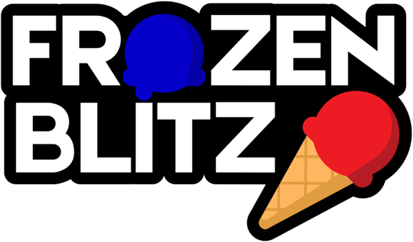

Q1012026
Head REFEREE Interactions. A team may only address the Head REFEREE with maximum of 2 people, 1 of which must be a STUDENT.
ViolationThe Head REFEREE will not address non-compliant team members or peripheral conversations.
Make ice cream, deliver it, check out. The full FROZEN BLITZ rules, built on the 2026 FIRST Robotics Competition rule set.

FIRST® (For Inspiration and Recognition of Science and Technology) was founded by inventor Dean Kamen to inspire young people’s interest in science and technology. As a robotics community that prepares young people for the future, FIRST is the world’s leading youth-serving nonprofit advancing STEM education. For 30 years, FIRST has combined the rigor of STEM learning with the fun and excitement of traditional sports and the inspiration that comes from community through programs that have a proven impact on learning, interest, and skill-building inside and outside of the classroom. FIRST provides programs that span a variety of age groups:
Please visit the FIRST website for more information about FIRST and its programs.
| Purpose | Vision | Mission |
|---|---|---|
| FIRST exists to prepare the young people of today for the world of tomorrow. | To transform our culture by creating a world where science and technology are celebrated and where young people dream of becoming science and technology leaders. | The mission of FIRST is to provide life-changing robotics programs that give young people the skills, confidence, and resilience to build a better world. |
In October 2019, Dr. Woodie Flowers, an innovator in design and engineering education and a Distinguished Advisor to FIRST and supporter of our mission, passed away. As thousands of heartfelt tributes to Woodie have poured in from around the world, it is clear his legacy will live on indefinitely through the gracious nature of our community and our ongoing commitment to empowering educators and building global citizens.
FIRST® Robotics Competition combines the excitement of sport with the rigors of science and technology. Teams of students are challenged to design, build, and program industrial-size robots and compete for awards, while they also create a team identity, raise funds, hone teamwork skills, and advance respect and appreciation for STEM within the local community.
Volunteer professional mentors lend their time and talents to guide each team. It’s as close to real-world engineering as a student can get. Plus, high school students gain access to exclusive scholarship opportunities from colleges, universities, and technical programs.
Each January at an event known as “Kickoff,” a new, challenging game is introduced. These exciting competitions combine the practical application of science and technology with the fun, intense energy, and excitement of a championship-style sporting event. Teams are encouraged to display Gracious Professionalism®, help other teams, and cooperate while competing. This is known as Coopertition®.
In 2026, FIRST Robotics Competition is projected to reach approximately 90,000 high-school students representing more than 3,700 teams. Teams represent more than 30 countries and come from nearly every state in the United States.
This off-season game, and this manual, were presented at the TideChallenge Kickoff on Monday, October 26, 2026, at 4:15 pm Guadalajara time (UTC-6). At the Kickoff, all participating teams:
The FIRST Core Values are fundamental to FIRST and unique to its programs. They emphasize friendly sportsmanship, respect for the contributions of others, teamwork, learning, and community involvement and are part of our commitment to fostering, cultivating, and preserving a culture of unity.
Our community expresses the FIRST philosophies of Gracious Professionalism® and Coopertition® through the FIRST Core Values.
Gracious Professionalism is part of the ethos of FIRST. It’s a way of doing things that encourages high quality work, emphasizes the value of others, and respects individuals and the community. Gracious Professionalism is not clearly defined for a reason. It is an aspirational ideal to always strive towards, not a goal to be achieved or a method of measuring someone, and for this reason, you can never say someone “is” or “is not” being Graciously Professional. We should each work to better embody Gracious Professionalism in all our actions. How we pursue this can and should mean different things to everyone.
Some possible meanings of Gracious Professionalism include:
In the context of FIRST, this means that all teams and participants should:
Knowledge, pride, and empathy should be comfortably and genuinely blended.
In the end, Gracious Professionalism is part of pursuing a meaningful life. When professionals use knowledge in a gracious manner and individuals act with integrity and sensitivity, everyone wins and society benefits.
It is a good idea to spend time going over this concept with your team and reinforcing it regularly. We recommend providing your team with real-life examples of Gracious Professionalism in practice, such as when a team loans valuable materials or expertise to another team that they will later face as an opponent in competition. Routinely highlight opportunities to display Gracious Professionalism at events and encourage team members to suggest ways in which they can demonstrate this quality themselves and through outreach activities.
At FIRST, Coopertition is displaying unqualified kindness and respect in the face of fierce competition. Coopertition is founded on the concept and philosophy that teams can and should help and cooperate with one another even as they compete. Coopertition involves learning from teammates and mentors. Coopertition means competing always but assisting and enabling others when you can.
The FROZEN BLITZ Game Manual is a resource for all FIRST Robotics Competition teams taking part in the TideChallenge. Its audience will find the following detail:
FROZEN BLITZ is built on the 2026 FIRST Robotics Competition rule set (REBUILT™ presented by Haas, Game Manual version TU22). All participants should also study Section 14 Event Rules (E) of the 2026 FIRST Robotics Competition Game Manual, available on the FIRST Robotics Competition Season Materials webpage. Those rules apply at TideChallenge events and carry the same weight as this document.
The intent of this manual is that the text means exactly, and only, what it says. Please avoid interpreting the text based on assumptions about intent, implementation of past rules, or how a situation might be in “real life.” There are no hidden requirements or restrictions. If you’ve read everything, you know everything.
Specific methods are used throughout this manual to highlight warnings, cautions, key words, and phrases. These conventions are used to alert the reader to important information and are intended help teams in constructing a ROBOT that complies with the rules in a safe manner.
Links to other section headings in this manual, external articles, and rule references appear in underlined text.
Key words that have a particular meaning within the context of the FIRST Robotics Competition and FROZEN BLITZ are defined in Section 10 Glossary and indicated in ALL CAPS throughout this document.
The rule numbering method indicates the section, subsection, and position of the rule within that subsection. The letter indicates the section in which the rule is published.
The following digit(s) represents the subsection in which the rule can be found. The final digits indicate the rule’s position within that subsection.
Imperial dimensions are followed by comparable metric dimensions in parentheses to provide metric users with the approximate size, mass, etc. Decimal values are rounded in order to limit the number of decimal places shown and the number of significant figures. Metric conversions in rules round such that the metric dimension is compliant with the rule (i.e. maximums round down, minimums round up). The metric conversions are offered for convenient reference only and do not overrule or take the place of the imperial dimensions presented in this manual and the official drawings (i.e. dimensions and rules will always defer to measurements using imperial units).
Rules include colloquial language, also called headlines, in an effort to convey an abbreviated version of the rule or rule set. There are two versions of headline formatting.
Evergreen rules, or rules which are expected to go relatively unchanged from season to season, are indicated with a leading asterisk and their rule number and headline are presented in bold deep teal text. “Relatively unchanged” means that the overall intent and presence of the rule from season to season is constant, but game specific terms may be updated as needed (e.g. changing FUEL to SCOOPS in a rule about what DRIVE COACHES may not contact during a MATCH). These rules also start their respective section, so their rule number is not expected to change from season to season.
Rules specific to FROZEN BLITZ use bold Pacific Blue text. Any disagreement between the specific language used in the rules and the colloquial language is an error, and the specific rule language is the ultimate authority. If you discover a disparity, please let us know at santi.arzate@tec.mx and we will correct it.
Team Updates are used to notify the FROZEN BLITZ community of revisions to the official documentation (e.g. the manual, drawings, etc.) or important event news. Team Updates are posted each Thursday, starting on the first Thursday after Kickoff and ending on the Thursday prior to the event.
Team Updates are posted on the official FROZEN BLITZ WhatsApp community and are published before 10:00 pm Guadalajara time (UTC-6).
Generally, Team Updates follow the following convention:
The Question and Answer System (Q&A) is a resource for clarifying the FROZEN BLITZ Game Manual and the official FIELD drawings. Teams can search for previously asked questions and responses or pose new questions. Questions can include examples for clarity or reference multiple rules to understand the relationships and differences between them.
The Q&A opens on Friday, October 30, 2026, at 4:15 pm Guadalajara time (UTC-6). The link to the Q&A will be shared in a Team Update. The Q&A may result in revisions to the text in the official manual (which are communicated using the process described in 1.6 Team Updates).
The responses in the Q&A do not supersede the text in the manual, although every effort will be made to eliminate inconsistencies between the two. While responses provided in the Q&A may be used to aid discussion at each event, per section 8 Inspection & Eligibility and section 5.7 Head REFEREE and FTA Interaction, REFEREES and INSPECTORS are the ultimate authority on rules.
The Q&A is not a resource for firm predictions on how a situation will play out an event. Questions about the following will not be addressed:
Weak questions are overly broad, vague, and/or include no rule references. Some examples of questions that will not be answered in the Q&A are:
Good questions ask generically about features of parts or designs, gameplay scenarios, or rules, and often reference one or more relevant rules within the question. Some examples of questions that will likely be answered in the Q&A are:
Questions from “FRC 99999” represent content asked by key volunteers (e.g., REFEREES, INSPECTORS, etc.), answered by the TideCrew Game Design Team, and are considered relevant to teams.
Every crew has a first wave. The TideChallenge is ours to share.
TideCrew was born from a family of robotics crews in Guadalajara, Jalisco. We build a place where the people who were called “too much” get to make extraordinary things, and we widen the door so the next ones get in, regardless of money or background.
For years, our mentors have designed a short challenge before January so students, rookies and veterans alike, can live what a FIRST build season really feels like before the official one begins. The first build season can be a lot. The TideChallenge exists so it doesn’t have to be: a short build season, no pressure, and one goal. Learn, and have fun doing it.
This season the door is wider. FROZEN BLITZ is open to the teams we call friends, so every crew can build, test, fail, fix, and play side by side.
THE PROMISE
WE WERE NEVER ABOUT THE MACHINES.
THEY WERE JUST OUR PROOF.
What you need to know before you build:
In FROZEN BLITZ, two competing ALLIANCES are invited to make ice cream and deliver it. Each ALLIANCE is assigned a SCOOP color (red or blue, based on ALLIANCE affiliation). Robots retrieve CONES and SCOOPS, build them into ICE CREAM, and deliver it to their DELIVERY ZONE. HUMAN PLAYERS assist from their SCOOPING STATION, where they place the HOOPS that make stacking possible, and from their DELIVERY ZONE, where they clear delivered ICE CREAM off the DELIVERY TRAYS, recycle its SCOOPS through the CHUTE, and throw its CONE back to their STORAGE. In the final moments of each MATCH, ALLIANCE ROBOTS race to the CHECKOUT ZONE to finish the day.
Each MATCH begins with a 15-second autonomous period, during which time ALLIANCE ROBOTS operate only on pre-programmed instructions to score points by:
In the final 2 minutes and 15 seconds of the MATCH, DRIVERS take control of the ROBOTS and score points by:
The ALLIANCE with the highest score at the end of the MATCH wins!
The ARENA includes all elements of the game infrastructure that are required to play FROZEN BLITZ: the FIELD, SCORING ELEMENTS (SCOOPS and CONES), and all equipment needed for FIELD control, ROBOT control, and scorekeeping.
All official models for the FROZEN BLITZ FIELD were created in SOLIDWORKS. The specification for the FROZEN BLITZ FIELD can be retrieved from a few locations:
The official drawings and CAD models of important elements of the FROZEN BLITZ FIELD are posted on the official FROZEN BLITZ WhatsApp community.
Each FIELD for FROZEN BLITZ is an approximately 360.0in (~9.14m) by 552.0in (~14.02m) carpeted area bounded by and including the inward- and upward-facing surfaces of the guardrails, the inward-facing surfaces of the ALLIANCE WALLS, and the front vertical faces of the ALLIANCE WALLS.
The FIELD is populated with the following elements:
The surface of the FIELD is low pile carpet. Guardrails form the long edges of the FIELD. Guardrails are a 20.0in (~50.8cm) tall system of transparent polycarbonate supported on the top and bottom by aluminum extrusion. There are 4 gates in the guardrail that allow access to the FIELD for placement and removal of ROBOTS. The gate passthrough, when open, is 38.0in (~96.5cm) wide. Gates are closed and shielded during the MATCH.
FIELD areas, zones, and markings of consequence are described below. Unless otherwise specified, the tape used to mark lines and zones throughout the FIELD is 2.0in (~5.1cm) wide gaffers tape, as used on official FIRST Robotics Competition FIELDS. The tape brand and exact color may vary from event to event.
One DELIVERY ZONE is located at the center of each long side of the FIELD. Each DELIVERY ZONE belongs to an ALLIANCE and consists of 2 DELIVERY TRAYS, 1 CHUTE, 1 PURPLE PLANE, the supporting structure shown, and a SAFE ZONE in front of the structure.
Each DELIVERY TRAY holds 1 ICE CREAM at a time and has 2 positions: raised (ready to receive ICE CREAM) and lowered (pivoted back toward the HUMAN PLAYER so the ICE CREAM can be removed). A lever locks each tray in the raised position; pulling the lever releases the mechanism and lets the tray pivot back. Only the HUMAN PLAYER at the DELIVERY ZONE moves the trays. The CHUTE sits between the 2 DELIVERY TRAYS of each DELIVERY ZONE structure. SCOOPS dropped into it roll straight out into the DELIVERY ZONE, right where a ROBOT that has just delivered is likely to be.
Every ICE CREAM goes through the same delivery cycle:
The 2 CHECKOUT ZONES are located at the center of the FIELD, 1 on each side of the CENTER LINE. Together they form an assembly of tables, delimited with ALLIANCE colored tape according to the side of the FIELD. The tables have an inner clearance of 49.0in (~1.24m) and are 29.5in (~74.9cm) tall.
There are 2 types of SCORING ELEMENTS: SCOOPS and CONES. SCOOPS are stacked on a CONE at the SCOOPING STATION, with a HOOP between each pair of SCOOPS. A stack becomes an ICE CREAM once it leaves the SCOOPING STATION (see 5.5.1 SCORING ELEMENT Scoring Criteria and G408). HOOPS are not SCORING ELEMENTS.
FROZEN BLITZ is played with oversized, felt-covered tennis balls called SCOOPS. A SCOOP has a rubber core with a felt cover and is 8.0in (~20.3cm) in diameter when inflated. Neutral SCOOPS are green (classic tennis ball color). Red ALLIANCE SCOOPS are pink or red, and blue ALLIANCE SCOOPS are blue or light blue.
SCOOPS are usually shipped deflated and are inflated with a hand pump until they measure 8.0in ±0.25in (~20.3cm ±0.6cm) in diameter, measured across the ball with a tape measure or caliper. FIELD STAFF check SCOOP size before each MATCH block and re-inflate as needed. Teams should design ROBOTS that tolerate small variations in SCOOP size and firmness.
The SCOOPS used at the TideChallenge are:
FROZEN BLITZ is also played with CONES. A CONE is a 9.0in (~22.9cm) tall orange plastic sport training cone with a 4.92in (~12.5cm) base diameter. CONE weight is not specified. CONES are Hirola 9in training cones (24-pack, ASIN B0BWSJHFBG), available on Amazon México.
A HOOP is a ring that sits on top of a SCOOP so that another SCOOP can rest on it. Without a HOOP, a SCOOP cannot be stacked on another SCOOP. HOOPS are introduced into the MATCH only by the HUMAN PLAYER at each SCOOPING STATION, who places them between SCOOPS as a stack is built. HOOPS are not SCORING ELEMENTS: they do not score points on their own and do not count toward the TIER of an ICE CREAM.
A HOOP is a torus (a solid ring with a round cross section) with a 4.00in (~10.2cm) outer diameter, a 2.33in (~5.9cm) inner diameter, and a 0.835in (~21.2mm) diameter cross section. HOOPS are white for both ALLIANCES and are 3D printed in PLA at 35% infill, which makes them quite light; HOOP weight is not specified.
The FIELD Management System (FMS) is all the electronics responsible for sensing and controlling the FROZEN BLITZ FIELD. The FMS encompasses all FIELD electronics, including computers, REFEREE controls, the wireless access point, sensors, stack lights, E-Stops, etc.
When a DRIVE TEAM connects the Ethernet cable from their assigned DRIVER STATION to their OPERATOR CONSOLE, the Driver Station Software on the OPERATOR CONSOLE computer communicates with the FMS. Once connected, the open ports available are described in Table 7-5.
Note that ROBOT code cannot be deployed while connected to the FMS.
The FMS alerts participants to milestones in the MATCH using audio cues detailed in Table 4-1. Please note that audio cues are intended as a courtesy to participants and not intended as official MATCH markers. If there is a discrepancy between an audio cue and the FIELD timers, the FIELD timers are the authority.
| Event | Timer Value | Audio Cue |
|---|---|---|
| MATCH start | 0:15 (for AUTO) | “Cavalry Charge” |
| AUTO ends | 0:00 (for AUTO) | “Buzzer” |
| TELEOP begins | 2:15 | “3 Bells” |
| END GAME begins (CHECKOUT ZONE protection engaged) | 0:30 | “Steam Whistle” |
| MATCH end | 0:00 | “Buzzer” |
| MATCH stopped | n/a | “Foghorn” |
FIELD STAFF are responsible for making sure the MATCHES are cycled through efficiently, fairly, safely, and with a spirit of cooperation, Gracious Professionalism, and generosity of spirit. There are 3 FIELD-side key volunteer roles with whom teams should be familiar:
In FROZEN BLITZ, 2 ALLIANCES (an ALLIANCE is a cooperative of up to 4 FIRST Robotics Competition teams) play MATCHES, set up and implemented per the details described below. Each ALLIANCE plays each MATCH with 2 ROBOTS.
Each MATCH cycle consists of pre-MATCH setup, the 2-minute and 30-second MATCH, and the post-MATCH reset.
During the MATCH, ROBOTS collect CONES and SCOOPS, build them into ICE CREAM at their SCOOPING STATION, deliver it to their DELIVERY ZONE, and refill their FREEZER. HUMAN PLAYERS place HOOPS at their SCOOPING STATION and, at their DELIVERY ZONE, clear each delivered ICE CREAM, recycle its SCOOPS through the CHUTE, and return its CONE to their STORAGE. ROBOTS conclude the MATCH in the CHECKOUT ZONE.
A DRIVE TEAM is a set of up to 5 people from the same FIRST Robotics Competition team responsible for team performance for a specific MATCH. There are 4 specific roles on a DRIVE TEAM which ALLIANCES can use to assist ROBOTS, and no more than 1 member of the DRIVE TEAM may be a non-STUDENT.
| Role | Description | Max./DRIVE TEAM | Criteria |
|---|---|---|---|
| DRIVE COACH | a guide or advisor | 1 | any team member, must wear “DRIVE COACH” button |
| TECHNICIAN | a resource for ROBOT troubleshooting, setup, and removal from the FIELD | 1 | any team member, must wear “TECHNICIAN” button |
| DRIVER | an operator and controller of the ROBOT | 3 (combined) | STUDENT, must wear a “DRIVE TEAM” button |
| HUMAN PLAYER | a SCORING ELEMENT manager |
A STUDENT is a person who has not completed high-school, secondary school, or the comparable level as of September 1 prior to Kickoff.
The TECHNICIAN provides teams with a technical resource for pre-MATCH setup, ROBOT connectivity, OPERATOR CONSOLE troubleshooting, and post-MATCH removal of the ROBOT. Some pre-MATCH responsibilities for the TECHNICIAN may include, but are not limited to:
Each ALLIANCE needs 2 HUMAN PLAYERS during a MATCH: 1 at its SCOOPING STATION, who places HOOPS, and 1 at its DELIVERY ZONE, who runs the delivery cycle (lowering the DELIVERY TRAYS, recycling SCOOPS through the CHUTE, and returning CONES to the STORAGE). Per Table 5-1, each team is allotted up to 3 STUDENTS who may be assigned as DRIVERS or HUMAN PLAYERS. If an ALLIANCE does not have at least 2 HUMAN PLAYERS available, 1 of the ALLIANCE’S teams may substitute a STUDENT TECHNICIAN as a HUMAN PLAYER for that MATCH only. In this case,
Before each MATCH begins, FIELD STAFF stage SCORING ELEMENTS as described in section 5.3.4 SCORING ELEMENTS. DRIVE TEAMS stage their ROBOTS (as described in section 5.3.3 ROBOTS) and OPERATOR CONSOLES (as described in section 5.3.2 OPERATOR CONSOLES). Then, DRIVE TEAMS take their places as described in section 5.3.1 DRIVE TEAMS.
DRIVE TEAMS prepare for a MATCH by staging in the appropriate areas, according to their role on the DRIVE TEAM, and by identifying themselves accordingly. DRIVE TEAM starting conditions are listed below, and a DRIVE TEAM obstructing or delaying any of the conditions is at risk of violating G301.
DRIVE TEAMS set up their OPERATOR CONSOLE as soon as the DRIVE TEAM from the previous MATCH has cleared the area. OPERATOR CONSOLES must be compliant with all relevant rules, specifically those in section 7.9 OPERATOR CONSOLE. The OPERATOR CONSOLE is plugged into the team’s assigned DRIVER STATION, as indicated on the team sign. Any control devices worn or held by their HUMAN PLAYERS and/or DRIVERS during the MATCH must be disconnected from or set on or beside the OPERATOR CONSOLE before the MATCH can begin. A DRIVE TEAM obstructing or delaying OPERATOR CONSOLE setup is at risk of violating G301.
DRIVE TEAMS stage their ROBOT in accordance with G303. A DRIVE TEAM obstructing or delaying ROBOT setup requirements is at risk of violating G301.
If order of placement matters to either or both ALLIANCES, the ALLIANCE notifies the Head REFEREE during setup for that MATCH, and the Head REFEREE instructs ALLIANCES to alternate placement of ROBOTS. In a Qualification MATCH, ROBOTS are placed in the following order:
In a Playoff MATCH, the same pattern is applied, but instead of blue ALLIANCE placing last, the higher seeded ALLIANCE (regardless of color) places last.
38 SCORING ELEMENTS, 28 SCOOPS (4 red, 4 blue, and 20 neutral) and 10 CONES, are staged for each MATCH as follows:
In addition, 20 HOOPS are staged at each SCOOPING STATION, on the floor beside its HUMAN PLAYER.
The first period of each MATCH is 15 seconds long and called the Autonomous Period (AUTO). During AUTO, ROBOTS operate without any DRIVE TEAM control or input. ROBOTS attempt to reach their ALLIANCE’S FREEZER, place CONES, and stack SCOOPS.
The second period of each MATCH is the remaining 2 minutes and 15 seconds (2:15) and called the Teleoperated Period (TELEOP). During TELEOP, DRIVERS remotely operate ROBOTS to retrieve and place CONES in the SCOOPING ZONE, stack SCOOPS at the SCOOPING STATION, deliver ICE CREAM to the DELIVERY ZONE, refill the FREEZER with SCOOPS, and engage with the CHECKOUT ZONE. The final 30 seconds of TELEOP are called END GAME.
| MATCH Period | MATCH Timeframe | Duration | Timer Values |
|---|---|---|---|
| AUTO | AUTO | 15 seconds | 0:15 – 0:00 |
| TELEOP | TELEOP | 2 minutes 15 seconds | 2:15 – 0:00 |
| END GAME | 30 seconds | 0:30 – 0:00 |
ALLIANCES are rewarded for accomplishing various actions throughout a MATCH, including placing CONES, stacking SCOOPS, delivering ICE CREAM, refilling their FREEZER, checking out, and winning or tying MATCHES.
Rewards are granted either via MATCH points or Ranking Points (often abbreviated to RP, which increase the measure used to rank teams in the Qualification Tournament).
Scores are assessed at different moments of the MATCH:
Point values for tasks in FROZEN BLITZ are detailed in Table 5-3.
| Award | Awarded for… | MATCH points | Ranking Points | |
|---|---|---|---|---|
| AUTO | TELEOP | |||
| REACH | each ROBOT that achieves REACH | 3 | ||
| REACH BONUS | both ALLIANCE ROBOTS achieve REACH | 4 | ||
| CONE | each CONE placed in the SCOOPING ZONE at the end of AUTO | 2 | ||
| SCOOP | each SCOOP stacked on top of a CONE or another SCOOP at the end of AUTO | 4 | ||
| ICE CREAM | TIER 1: 1 SCOOP on a CONE, delivered | 2 | ||
| TIER 2: 2 SCOOPS on a CONE, delivered | 4 | |||
| TIER 3: 3 SCOOPS on a CONE, delivered | 6 | |||
| TIER 4: 4 SCOOPS on a CONE, delivered | 8 | |||
| TIER 5: 5 SCOOPS on a CONE, delivered | 10 | |||
| TOPPER | on a TIER 2 ICE CREAM | 5 | ||
| on a TIER 3 ICE CREAM | 10 | |||
| on a TIER 4 ICE CREAM | 15 | |||
| on a TIER 5 ICE CREAM | 20 | |||
| REFILL | each neutral SCOOP in the ALLIANCE’S FREEZER at the end of the MATCH (capped, see 5.5.1) | 1 | ||
| COLOR REFILL | each ALLIANCE color SCOOP in that ALLIANCE’S FREEZER at the end of the MATCH (capped, see 5.5.1) | 2 | ||
| HANDING | each CONE HANDED (once per trip out of STORAGE) | 2 | ||
| CHECKOUT | each ROBOT completely within the CHECKOUT ZONE | 5 | ||
| each ROBOT completely above the CHECKOUT ZONE and fully supported by it | 15 | |||
| ICE CREAM BONUS | 9 or more SCOOPS delivered in ICE CREAM. If the REACH BONUS was achieved, the threshold drops to 8. | 1 | ||
| CHECKOUT BONUS | ALLIANCE is credited with at least 20 CHECKOUT points (e.g. 1 ROBOT on top and 1 ROBOT in) | 1 | ||
| Win | completing a MATCH with more MATCH points than your opponent | 3 | ||
| Tie | completing a MATCH with the same number of MATCH points as your opponent | 1 | ||
An ALLIANCE can earn up to 5 Ranking Points per Qualification MATCH as described in Table 5-3. There are no Ranking Points or comparable points for the ICE CREAM BONUS or the CHECKOUT BONUS in Playoff MATCHES.
Count one ALLIANCE’S MATCH. REFILLS are capped by SCOOPS delivered and TOPPERS by ICE CREAM at that TIER, as in section 5.5.Example MATCH loaded
Unless otherwise noted, all violations are assigned for each instance of a rule violation. A description of the penalties is listed in Table 5-4. All rules throughout the Game Rules section are called as perceived by a REFEREE.
| Penalty | Description |
|---|---|
| MINOR FOUL | a credit of 4 points towards the opponent’s MATCH point total |
| MAJOR FOUL | a credit of 8 points towards the opponent’s MATCH point total |
| YELLOW CARD | issued by the Head REFEREE for egregious ROBOT or team member behavior or rule violations. A subsequent YELLOW CARD within the same tournament phase results in a RED CARD. |
| RED CARD | issued by the Head REFEREE for egregious ROBOT or team member behavior or rule violations which results in a team being DISQUALIFIED for the MATCH. |
| DISABLED | the state in which a ROBOT is commanded to deactivate all outputs, rendering the ROBOT inoperable for the remainder of the MATCH. |
| DISQUALIFIED | the state of a team in which they receive 0 MATCH points and 0 Ranking Points in a Qualification MATCH or causes their ALLIANCE to receive 0 MATCH points in a Playoff MATCH |
| VERBAL WARNING | a warning issued to a team by event staff or the Head REFEREE. |
| ALLIANCE is ineligible for RP | an ALLIANCE is ineligible for the specified RP for that MATCH. This overrides any RP awarded through normal MATCH play or other rule violations. |
In addition to rule violations explicitly listed throughout this document, YELLOW CARDS and RED CARDS are used in FIRST Robotics Competition to address team and ROBOT behavior that does not align with the mission, values, and culture of FIRST.
The Head REFEREE may assign a YELLOW CARD as a warning, or a RED CARD for egregious behavior inappropriate at a FIRST Robotics Competition event. If an action resulting in the assignment of a YELLOW or RED CARD is determined to be the result of an ARENA FAULT, the CARD will be rescinded.
YELLOW CARDS are additive, meaning that a second YELLOW CARD is automatically converted to a RED CARD. A team is issued a RED CARD for any subsequent incident in which they receive an additional YELLOW CARD, including earning a second YELLOW CARD during a single MATCH. A team that has received either a YELLOW CARD or a RED CARD carries a YELLOW CARD into subsequent MATCHES, except as noted below.
All YELLOW CARDS and G301 VERBAL WARNINGS are cleared at the conclusion of Practice, Qualification, and Playoff MATCHES. Other VERBAL WARNINGS issued by the Head REFEREE are cleared after Practice MATCHES and persist from Qualification MATCHES through subsequent tournament phases.
YELLOW and RED CARDS are applied based on the following:
| Time YELLOW or RED CARDS earned | MATCH to which CARD is applied |
|---|---|
| prior to Qualification MATCHES | REFEREES may or may not be present during Practice MATCHES. With input from event staff, the Head REFEREE may opt to perpetuate a VERBAL WARNING or YELLOW CARD earned prior to Qualification MATCHES to the first Qualification MATCH for particularly egregious behavior. |
| during the Qualification MATCHES | team’s current (or just-completed) MATCH. In the case where the team participated as a SURROGATE in the current (or just completed) MATCH, the card is applied to the team’s previous MATCH. |
| between the end of Qualification MATCHES and the start of Playoff MATCHES | ALLIANCE’S first Playoff MATCH |
| during the Playoff MATCHES | ALLIANCE’S current (or just-completed) MATCH |
During Playoff MATCHES, YELLOW and RED CARDS are assigned to the violating team’s entire ALLIANCE instead of to only the violating team. If an ALLIANCE receives 2 YELLOW CARDS, the entire ALLIANCE is issued a RED CARD which results in DISQUALIFICATION for the associated MATCH. If both ALLIANCES receive a RED CARD, the ALLIANCE assessed the first RED CARD, chronologically, is DISQUALIFIED and loses the MATCH.
There are several styles of violation wording used in this manual. Below are some example violations and a clarification of the way the violation would be assessed. The examples shown do not represent all possible violations, but rather a representative set of combinations.
| Example Violation | Expanded Interpretation |
|---|---|
| MINOR FOUL | Upon violation, a MINOR FOUL is assessed against the violating ALLIANCE. |
| MAJOR FOUL and YELLOW CARD | Upon violation, a MAJOR FOUL is assessed against the violating ALLIANCE. After the MATCH, the Head REFEREE presents the violating team with a YELLOW CARD. |
| MINOR FOUL per additional SCORING ELEMENT. If strategic, YELLOW CARD | Upon violation, a number of MINOR FOULS are assessed against the violating ALLIANCE equal to the number of additional SCORING ELEMENTS beyond the permitted quantity. Additionally, if the REFEREES determine that the action was strategic, the Head REFEREE presents the violating team with a YELLOW CARD after the MATCH. |
| MINOR FOUL. MAJOR FOUL if REPEATED | Upon initial violation in a MATCH, a MINOR FOUL is assessed against the violating ALLIANCE. If the ALLIANCE ROBOT repeats the infraction in the MATCH, a MAJOR FOUL is assessed against the violating ALLIANCE. |
| MAJOR FOUL, and for every 3 seconds in which the situation is not corrected, a MAJOR FOUL is assessed | Upon violation, a MAJOR FOUL is assessed against the violating ALLIANCE and the REFEREE begins to count. Their count continues until the criteria to discontinue the count are met, and for each 3 seconds within that time, an additional MAJOR FOUL is assessed against the violating ALLIANCE. A ROBOT in violation of this type of rule for 15 seconds receives a total of 6 MAJOR FOULS (assuming no other rules were being simultaneously violated). |
| RED CARD for the ALLIANCE | <p>After the MATCH, the Head REFEREE presents the violating ALLIANCE with a RED CARD in the following fashion:</p> <ul class="l-bullet"><li>In a Playoff MATCH, a single RED CARD is assessed to the ALLIANCE.</li><li>In all other scenarios, each team on the ALLIANCE is issued a RED CARD.</li></ul> |
The Head REFEREE has the ultimate authority in the ARENA during the event, but may receive input from additional sources, e.g. the TideCrew Game Design Team, FTA, and other event staff. The Head REFEREE rulings are final. No event staff, including the Head REFEREE, will review video, photos, artistic renderings, etc. of any MATCH, from any source, under any circumstances.
Each ALLIANCE has a designated Question Box near the scoring table. If a DRIVE TEAM has a question about a MATCH, the FIELD, etc., they may send up to 2 DRIVE TEAM members to their corresponding Question Box. Depending on timing, the Head REFEREE or FTA may postpone any requested discussion until the end of the subsequent MATCH.
Technical questions regarding FIELD or ROBOT operation are addressed by the FTA, and additional team members are invited to participate in these conversations if necessary. If a DRIVE TEAM needs clarification on a ruling or score, per Q101, up to 2 DRIVE TEAM members should address the Head REFEREE after the ARENA Reset Signal (e.g. FIELD lights turn green).
Head REFEREE Interactions. A team may only address the Head REFEREE with maximum of 2 people, 1 of which must be a STUDENT.
ViolationThe Head REFEREE will not address non-compliant team members or peripheral conversations.
Keep it cool. It’s an ice cream game. Any team interaction with the Head REFEREE must be appropriate.
ViolationThe Head REFEREE may terminate the conversation to allow time for parties to cool down. A person with subsequent violations will not be allowed to interact with the Head REFEREE.
SCORING ELEMENTS that leave the FIELD are placed back into the FIELD approximately at the point of exit by FIELD STAFF at the earliest safe opportunity. The exception is SCORING ELEMENTS that leave the FIELD into a DELIVERY ZONE station: the HUMAN PLAYER there returns SCOOPS through the CHUTE and CONES to the STORAGE, as in the delivery cycle (section 4.4). HOOPS that leave the FIELD stay out of play.
An ARENA FAULT (an error in ARENA operation) is not called for MATCHES that accidentally begin with damaged SCORING ELEMENTS. Damaged SCORING ELEMENTS are not replaced until the next ARENA reset period. DRIVE TEAMS should alert the FIELD STAFF to any missing or damaged SCORING ELEMENTS prior to the start of the MATCH.
Once the MATCH is over and the Head REFEREE determines that the FIELD is safe for FIELD STAFF and DRIVE TEAMS, they or their designee change the FIELD lights to green and DRIVE TEAMS may retrieve their ROBOT.
In addition to the 2 minutes and 30 seconds (2:30) of game play, each MATCH also has pre- and post-MATCH time to reset the ARENA. During ARENA reset, the ARENA is cleared of ROBOTS and OPERATOR CONSOLES from the MATCH that just ended, ROBOTS and OPERATOR CONSOLES for the subsequent MATCH are loaded into the ARENA by DRIVE TEAMS, and FIELD STAFF reset ARENA elements.
FIRST Robotics Competition uses 3 words in the context of how durations and actions are assessed with regards to evaluation of rules and assignment of violations. These words provide general guidance to describe benchmarks to be used across the program. It is not the intent for REFEREES to provide a count during the time periods.
FROZEN BLITZ game rules follow the 2026 FIRST Robotics Competition structure: personal safety, conduct, pre-MATCH, in-MATCH, and post-MATCH. Evergreen rules keep their 2026 wording; rules unique to FROZEN BLITZ follow them in each subsection.
Humans, remain outside the FIELD. A team member may not reach into the FIELD with any part of their body during a MATCH.
A HUMAN PLAYER placing a HOOP at their SCOOPING STATION per G434 is an exception to this rule.
ViolationVERBAL WARNING. YELLOW CARD if subsequent violations during the event.
Never step over the guardrail. A team member may only enter or exit the FIELD through open gates and only enter if FIELD lighting (FIELD facing side of the team signs and timers) is green, unless explicitly instructed by a REFEREE or an FTA.
ViolationVERBAL WARNING. YELLOW CARD if subsequent violations during the event.
Be careful what you interact with. A team member is prohibited from the following actions with regards to interaction with ARENA elements.
ViolationVERBAL WARNING. YELLOW CARD if subsequent violations during the event.
Teams may not enable their ROBOTS on the FIELD. Teams may not tether to the ROBOT while on the FIELD except in special circumstances (e.g. after Opening Ceremonies, before an immediate MATCH replay, etc.) and with the express permission from the FTA or a REFEREE.
ViolationVERBAL WARNING. YELLOW CARD if subsequent violations during the event.
Be a good person. All teams must be civil toward everyone and respectful of team and event equipment while at a FIRST Robotics Competition event.
ViolationVERBAL WARNING. YELLOW CARD if subsequent violations during the event.
Don’t bang on the glass. A team member may never strike or hit the DRIVER STATION plastic windows.
ViolationVERBAL WARNING. YELLOW CARD if subsequent violations during the event.
Asking other teams to throw a MATCH – not cool. A team may not encourage an ALLIANCE of which it is not a member to play beneath its ability.
NOTE: This rule is not intended to prevent an ALLIANCE from planning and/or executing its own strategy in a specific MATCH in which all the teams are members of the ALLIANCE.
ViolationVERBAL WARNING. RED CARD if subsequent violations during the event.
Letting someone coerce you into throwing a MATCH – also not cool. A team, as the result of encouragement by a team not on their ALLIANCE, may not play beneath its ability.
NOTE: This rule is not intended to prevent an ALLIANCE from planning and/or executing its own strategy in a specific MATCH in which all the ALLIANCE members are participants.
ViolationVERBAL WARNING. RED CARD if subsequent violations during the event.
Throwing your own MATCH is bad. A team may not intentionally lose a MATCH or sacrifice Ranking Points in an effort to lower their own ranking or manipulate the rankings of other teams.
ViolationVERBAL WARNING. RED CARD if subsequent violations during the event.
Don’t violate rules for RPs. A team or ALLIANCE may not collude with another team to each purposefully violate a rule in an attempt to influence Ranking Points.
ViolationYELLOW CARD and the ALLIANCE is ineligible for the ICE CREAM BONUS and CHECKOUT BONUS RPs.
Don’t abuse ARENA access. A team member (except DRIVERS, HUMAN PLAYERS, and DRIVE COACHES) granted access to restricted areas in and around the ARENA (e.g. via TECHNICIAN button, event issued Media badges, etc.) may not assist or use signaling devices during the MATCH. Exceptions will be granted for inconsequential infractions and in cases concerning safety.
ViolationVERBAL WARNING. YELLOW CARD if subsequent violations during the event.
Show up to your Qualification MATCHES. If a ROBOT has passed initial, complete inspection, at least 1 member of its DRIVE TEAM must report to the ARENA and participate in each of their assigned Qualification MATCHES.
ViolationDISQUALIFIED from the current MATCH.
Keep your ROBOT together. A ROBOT may not intentionally detach or leave a part on the FIELD.
ViolationRED CARD.
Don’t expect to gain by doing others harm. A strategy not consistent with standard gameplay and clearly aimed at forcing the opponent ALLIANCE to violate a rule is not in the spirit of FIRST Robotics Competition and not allowed. Rule violations forced in this manner will not result in an assignment of a penalty to the targeted ALLIANCE.
ViolationMAJOR FOUL. YELLOW CARD if REPEATED.
Egregious or exceptional violations. Egregious behavior beyond what is listed in the rules or subsequent violations of any rule or procedure during the event is prohibited.
In addition to rule violations explicitly listed in this manual and witnessed by a REFEREE, the Head REFEREE may assign a YELLOW or RED CARD for egregious ROBOT actions or team member behavior at any time during the event.
Intentionally violating a rule that only results in a YELLOW CARD in an ALLIANCE’S potential last MATCH (such as a team’s last Qualification MATCH or a Playoff MATCH that could eliminate the ALLIANCE) will be under increased scrutiny and will likely result in a RED CARD.
Please see section 5.6.1 YELLOW and RED CARDS for additional detail.
ViolationYELLOW or RED CARD.
All teams can play. A team may not encourage another team to exclude their ROBOT or be BYPASSED from a Qualification MATCH for any reason.
ViolationYELLOW CARD. RED CARD if the ROBOT does not participate in the MATCH.
Be prompt. A DRIVE TEAM member may not cause significant delays to the start of their MATCH. Causing a significant delay requires both of the following to be true:
ViolationIf a Qualification MATCH, VERBAL WARNING. MAJOR FOUL for the upcoming MATCH if a subsequent violation occurs within the tournament phase. If the DRIVE TEAM is not MATCH ready within 2 minutes of the VERBAL WARNING/MAJOR FOUL and the Head REFEREE perceives no good faith effort by the DRIVE TEAM to quickly become MATCH ready, DISABLED. If a Playoff MATCH, VERBAL WARNING issued to the ALLIANCE. MAJOR FOUL for the ALLIANCE’S upcoming MATCH if a subsequent violation occurs within the tournament phase. If the ALLIANCE is not MATCH ready within 2 minutes of the VERBAL WARNING/MAJOR FOUL and the Head REFEREE perceives no good faith effort by the DRIVE TEAM(S) to quickly become MATCH ready, the offending team’s ROBOT is DISABLED.
Limit what you use during a MATCH. Items used during a MATCH must fit on your team’s DRIVER STATION shelf, be worn or held by members from your DRIVE TEAM, or be an item used as an accommodation (e.g. stools, crutches, etc.). Regardless of if the equipment fits the criteria above, it may not:
Exceptions to part B are granted for MOMENTARY extensions above 78.0in (1.981m) and for individuals above 78.0in (1.981m) wearing PPE or reasonable decorative apparel such as hats, headbands, etc.
ViolationMATCH will not start until the situation is remedied. If discovered or used inappropriately during a MATCH, YELLOW CARD.
Start your ROBOTS. A ROBOT must meet all following MATCH-start requirements:
ViolationIf fix is a quick remedy, the MATCH won’t start until all requirements are met. If it is not a quick remedy, DISABLED and, at the discretion of the Head REFEREE, must be re-inspected. If a ROBOT not compliant with part B or C participates, its team receives a RED CARD.
Rules in this section pertain to game play once a MATCH begins.
The AUTO period is the first 15 seconds of the MATCH, and the FMS blocks any DRIVER control, so ROBOTS operate with only their pre-programmed instructions. Rules in this section apply only during the AUTO period.
Behind the lines. In AUTO, each DRIVE TEAM member must remain in their staged areas. A DRIVE TEAM member staged behind the STARTING LINE may not contact anything in front of the STARTING LINE, unless for personal or equipment safety, to press the E-Stop, or granted permission by a Head REFEREE or FTA.
ViolationMINOR FOUL regardless of the number of items contacted.
Let the ROBOT do its thing. In AUTO, a DRIVE TEAM member may not directly or indirectly interact with a ROBOT or an OPERATOR CONSOLE unless for personal safety, OPERATOR CONSOLE safety, or pressing an E-Stop. A HUMAN PLAYER placing HOOPS at their SCOOPING STATION or performing their role at their DELIVERY ZONE is an exception to this rule.
ViolationMINOR FOUL and YELLOW CARD.
The shop isn’t open yet. In AUTO, a ROBOT may not cross the FIELD such that its BUMPERS break the plane defined by the CENTER LINE.
ViolationMAJOR FOUL.
ROBOTS: use SCORING ELEMENTS as directed. A ROBOT may not deliberately use a SCORING ELEMENT in an attempt to ease or amplify a challenge associated with a FIELD element.
ViolationMAJOR FOUL per SCORING ELEMENT.
Keep SCORING ELEMENTS in bounds. A ROBOT may not intentionally eject SCORING ELEMENTS from the FIELD (either directly or by bouncing off a FIELD element or other ROBOT).
ViolationMINOR FOUL. If REPEATED, MAJOR FOUL.
Don’t abuse SCORING ELEMENTS. Neither a ROBOT nor a HUMAN PLAYER may damage a SCORING ELEMENT.
ViolationVERBAL WARNING. MAJOR FOUL if REPEATED in any subsequent MATCHES during the event. If via a ROBOT and the Head REFEREE determines that further damage is likely to occur, DISABLED. Corrective action (such as eliminating sharp edges, removing the damaging MECHANISM, and/or re-inspection) may be required before the ROBOT may compete in subsequent MATCHES.
One SCORING ELEMENT at a time. A ROBOT may not have greater-than-MOMENTARY CONTROL of more than 1 SCORING ELEMENT (CONE, SCOOP, or ICE CREAM) at a time, either directly or transitively through other objects.
A ROBOT is in CONTROL of a SCORING ELEMENT if:
ViolationMINOR FOUL per additional SCORING ELEMENT. If strategic, YELLOW CARD.
It’s not ice cream until it leaves the shop. A stack is not an ICE CREAM until the tip of its CONE has completely left the SCOOPING STATION. Until then, the CONE and each SCOOP in the stack are individual SCORING ELEMENTS for all rules in this manual.
Don’t hoard opposing ALLIANCE SCOOPS. A ROBOT may not restrict access to more than 1 opposing ALLIANCE color SCOOP except during END GAME.
ViolationMINOR FOUL, and for every 3 seconds in which the situation is not corrected, a MAJOR FOUL is assessed.
Stay out of the other shop’s pantry. A ROBOT may not enter the opponent’s FREEZER or STORAGE (i.e. its BUMPERS may not be partially or completely within them), and may not gain CONTROL of a SCORING ELEMENT located in the opponent’s FREEZER or STORAGE.
Exceptions to this rule:
ViolationMINOR FOUL per entry. MAJOR FOUL per SCORING ELEMENT if the ROBOT gains CONTROL of a SCORING ELEMENT from there (other than as permitted above).
No throwing SCORING ELEMENTS. A ROBOT may not use an active MECHANISM to shoot SCORING ELEMENTS into the air in a way that’s prohibited in R207, kick them across the floor, or eject them in a forceful way (i.e. the SCORING ELEMENT is caused to move a significant distance).
ViolationMAJOR FOUL per SCORING ELEMENT. YELLOW CARD if REPEATED, or if the REFEREE perceives a strategic benefit (e.g. the SCORING ELEMENT is launched onto a stack, a DELIVERY TRAY, or into a FREEZER).
They don’t pay us enough. An ICE CREAM may not be taller than 5 SCOOPS. It gets too complicated, and they don’t pay us enough.
ViolationMAJOR FOUL.
Stack in the designated zone. A ROBOT may only stack SCOOPS at their ALLIANCE’S SCOOPING STATION.
ViolationMAJOR FOUL per SCORING ELEMENT.
ROBOTS must be safe. A ROBOT may not pose an undue hazard to a human, an ARENA element, or another ROBOT in the following ways:
ViolationDISABLED. Corrective action (such as repair of BUMPERS, removing the unsafe MECHANISM, and/or re-inspection) may be required before the ROBOT will be allowed to compete in subsequent MATCHES.
Keep your BUMPERS low. ROBOT extensions may not interact with the carpet such that the BUMPERS are lifted out of the BUMPER ZONE (see R405).
ViolationMINOR FOUL. Corrective action (such as removing the offending MECHANISM, and/or re-inspection) may be required before the ROBOT will be allowed to compete in subsequent MATCHES.
Don’t damage the FIELD. A ROBOT may not damage FIELD elements.
ViolationVERBAL WARNING. If the Head REFEREE infers that additional damage is likely, DISABLED. YELLOW CARD for any subsequent damage during the event. Corrective action (such as eliminating sharp edges, removing the damaging MECHANISM, and/or re-inspection) may be required before the ROBOT will be allowed to compete in subsequent MATCHES.
Watch your FIELD interaction. A ROBOT is prohibited from the following interactions with FIELD elements (with the exception of the CHECKOUT ZONE tables):
ViolationMAJOR FOUL, plus YELLOW CARD if REPEATED, or longer than MOMENTARY. If the Head REFEREE infers that damage is likely, DISABLED. Corrective action (such as removing the offending MECHANISM, and/or re-inspection) may be required before the ROBOT will be allowed to compete in subsequent MATCHES.
Expansion limits. A ROBOT may not extend beyond the expansion limit described in R105. This rule does not apply to a ROBOT completely within its CHECKOUT ZONE during END GAME.
Exceptions to this rule:
ViolationMINOR FOUL. If strategic (e.g. the expansion results in scoring a SCORING ELEMENT), RED CARD.
Note, G419, G420, and G421 are mutually exclusive. A single ROBOT to ROBOT interaction which violates more than 1 of these rules results in the most punitive penalty, and only the most punitive penalty, being assessed.
Stay out of other ROBOTS. A ROBOT may not damage or functionally impair an opponent ROBOT by initiating contact, either directly or transitively via a SCORING ELEMENT CONTROLLED by the ROBOT:
Exceptions to this rule:
ViolationMAJOR FOUL and YELLOW CARD, or if opponent ROBOT is unable to drive, then MAJOR FOUL and RED CARD.
This isn’t combat robotics. A ROBOT may not intentionally and/or recklessly damage or functionally impair an opponent ROBOT.
ViolationMAJOR FOUL and YELLOW CARD, or if opponent ROBOT is unable to drive, then MAJOR FOUL and RED CARD.
Don’t tip or entangle. A ROBOT may not deliberately attach to, tip over, or entangle with an opponent ROBOT.
ViolationMAJOR FOUL and YELLOW CARD, or if CONTINUOUS or opponent ROBOT is unable to drive, then MAJOR FOUL and RED CARD.
There’s a 3-count on PINS. A ROBOT may not PIN an opponent’s ROBOT for more than 3 seconds. A ROBOT is PINNING if it is preventing the movement of an opponent ROBOT by contact, either direct or transitive (such as against a FIELD element). A PIN count ends once any of the following criteria below are met:
For criteria A, the PIN count pauses once ROBOTS are separated by 72.0in (1.83m) until either the PIN ends or the PINNING ROBOT moves back within 72.0in (1.83m), at which point the PIN count is resumed.
For criteria B, the PIN count pauses once either ROBOT has moved 72.0in (1.83m) from where the PIN initiated until the PIN ends or until both ROBOTS move back within 72.0in (1.83m), at which point the PIN count is resumed.
ViolationMINOR FOUL, and for every 3 seconds in which the situation is not corrected, a MAJOR FOUL is assessed.
Don’t collude with your partners to shut down major parts of game play. 2 or more ROBOTS that appear to a REFEREE to be working together may not isolate or close off any major element of MATCH play.
ViolationMAJOR FOUL, and for every 3 seconds in which the situation is not corrected, a MAJOR FOUL is assessed.
CHECKOUT ZONE protection. During END GAME, a ROBOT may not contact, directly or transitively through a SCORING ELEMENT, an opponent ROBOT that is in contact with the opponent’s CHECKOUT ZONE, regardless of who initiates contact. This rule does not apply to contact between 2 ROBOTS that are each in contact with their own ALLIANCE’S CHECKOUT ZONE.
ViolationMAJOR FOUL. If the contacted ROBOT is not supported by the carpet at the time of contact, the contacted ROBOT is awarded CHECKOUT points as if it were completely above the CHECKOUT ZONE and fully supported by it.
Nobody likes a dropped cone. A ROBOT may not contact, directly or transitively through a SCORING ELEMENT, an opponent ROBOT that is at least half within that opponent’s SAFE ZONE, regardless of who initiates contact. Contact initiated by a part of the protected ROBOT that is outside its SAFE ZONE is an exception to this rule. Whether a ROBOT is at least half within its SAFE ZONE is the REFEREE’S call, based on its BUMPERS, and that call is final and not subject to review.
ViolationMAJOR FOUL. If the contact causes any SCORING ELEMENT in the protected ROBOT’S stack, ICE CREAM, or CONTROL to fall, MAJOR FOUL and YELLOW CARD.
Employees only. A ROBOT may not enter an opponent’s SAFE ZONE (i.e. its BUMPERS may not be partially or completely within it). A ROBOT forced into an opponent’s SAFE ZONE by contact from an opponent ROBOT is an exception to this rule.
ViolationMINOR FOUL if MOMENTARY. MAJOR FOUL if intentional or greater-than-MOMENTARY.
If an opponent’s down, back off. Fallen (i.e. tipped over) ROBOTS attempting to right themselves (either by themselves or with assistance from a partner ROBOT) have one 10-second grace period in which they may not be contacted by an opponent ROBOT. This protection lasts for either 10 seconds or until the protected ROBOT has completed the righting operation, whichever comes first.
ViolationMINOR FOUL. If intentional, YELLOW CARD.
No wandering. A DRIVE TEAM member must remain in their designated area as follows:
Exceptions are granted in cases concerning safety and for actions that are inadvertent, MOMENTARY, and inconsequential.
ViolationMINOR FOUL.
DRIVE COACHES and other teams: hands off the controls. A ROBOT shall be operated only by the DRIVERS and/or HUMAN PLAYERS of that team. A DRIVE COACH activating their E-Stop is the exception to this rule.
ViolationMAJOR FOUL. RED CARD if greater-than-MOMENTARY.
DRIVE TEAMS, watch your reach. A DRIVE TEAM member may not extend beyond the PURPLE PLANE.
ViolationMINOR FOUL.
Humans: use SCORING ELEMENTS as directed. A DRIVE TEAM member may not deliberately use a SCORING ELEMENT in an attempt to ease or amplify a challenge associated with a FIELD element.
ViolationMAJOR FOUL.
DRIVE COACHES, SCORING ELEMENTS are off limits. DRIVE COACHES may not touch SCORING ELEMENTS, unless for safety purposes.
ViolationMINOR FOUL per instance.
Only feed your ALLIANCE ROBOTS. HUMAN PLAYERS may not deliver SCORING ELEMENTS to opponent ROBOTS.
ViolationMINOR FOUL per SCORING ELEMENT.
One hand on the hoop. HOOPS may only be introduced into the MATCH by the HUMAN PLAYER at their ALLIANCE’S SCOOPING STATION. The HUMAN PLAYER must place each HOOP using only 1 hand, on top of a SCOOP already stacked at the SCOOPING STATION.
ViolationMINOR FOUL per HOOP.
Hands off the merchandise. A HUMAN PLAYER at the SCOOPING STATION may not contact a SCOOP or CONE in any way, for any purpose, including to place, arrange, or stabilize a stack.
ViolationMINOR FOUL. If the REFEREE perceives the HUMAN PLAYER is strategically arranging or stabilizing the SCOOPS below, MAJOR FOUL.
ROBOTS don’t do HOOPS. A ROBOT may not place a HOOP, or deliberately CONTROL a HOOP that is not part of a stack or an ICE CREAM.
ViolationMINOR FOUL per HOOP.
Recycle through the CHUTE. The HUMAN PLAYER at the DELIVERY ZONE may return SCOOPS to the FIELD only by dropping them into their ALLIANCE’S CHUTE.
ViolationMINOR FOUL per SCOOP.
Cones go home. The HUMAN PLAYER at the DELIVERY ZONE must return each CONE by throwing or rolling it into their ALLIANCE’S STORAGE. A CONE whose first contact after leaving the HUMAN PLAYER’S hand is with anything other than the carpet inside their ALLIANCE’S STORAGE (e.g. other carpet, a FIELD element, or a ROBOT) is a violation.
ViolationMAJOR FOUL per CONE.
No catching the ice cream. The HUMAN PLAYER at the DELIVERY ZONE may contact only SCORING ELEMENTS on a lowered DELIVERY TRAY, and SCORING ELEMENTS that leave the FIELD into their station (which are then returned per G437 and G438). They may not contact an ICE CREAM that is on a raised tray or still CONTROLLED by a ROBOT.
ViolationMINOR FOUL. If the REFEREE perceives the HUMAN PLAYER is strategically catching, stabilizing, or guiding an ICE CREAM, MAJOR FOUL.
Leave promptly. A DRIVE TEAM member may not cause significant or multiple delays to the start of a subsequent MATCH, scheduled break content, or other FIELD activities.
ViolationVERBAL WARNING. YELLOW CARD if subsequent violations at any point during the event.
The rules listed below explicitly address legal parts and materials and how those parts and materials may be used on a FROZEN BLITZ ROBOT. A ROBOT is an electromechanical assembly built by the FIRST Robotics Competition team to play the current season’s game and includes all the basic systems required to be an active participant in the game – power, communications, control, BUMPERS, and movement about the FIELD. A BUMPER is a protective assembly designed to attach to the exterior of the ROBOT and constructed as specified in section 7.4 BUMPER Rules.
There are many reasons for the structure of the rules, including safety, reliability, parity, creation of a reasonable design challenge, adherence to professional standards, impact on the competition, and compatibility with the Kit of Parts (KOP). The KOP is the collection of items listed on the current season’s Kickoff Kit Checklists, distributed to the team via FIRST Choice in the current season, or paid for completely (except shipping) with a Product Donation Voucher (PDV) from the current season.
Another intent of these rules is to have all energy sources and active actuation systems on the ROBOT (e.g. batteries, compressors, motors, servos, cylinders, and their controllers) drawn from a well-defined set of options. This is to ensure that all teams have access to the same actuation resources and that the INSPECTORS are able to accurately and efficiently assess the legality of a given part.
ROBOTS are made up of COMPONENTS and MECHANISMS. A COMPONENT is any part in its most basic configuration, which cannot be disassembled without damaging or destroying the part or altering its fundamental function. A MECHANISM is an assembly of COMPONENTS that provide specific functionality on the ROBOT. A MECHANISM can be disassembled (and then reassembled) into individual COMPONENTS without damage to the parts.
Many rules in this section reference Commercial-Off-The-Shelf (COTS) items. A COTS item must be a standard (i.e. not custom order) part commonly available from a VENDOR for all teams for purchase. To be a COTS item, the COMPONENT or MECHANISM must be in an unaltered, unmodified state (with the exception of installation or modification of any software). Items that are no longer commercially available but are functionally equivalent to the original condition as delivered from the VENDOR are considered COTS and may be used.
A VENDOR is a legitimate business source for COTS items that satisfies all the following criteria:
A FABRICATED ITEM is any COMPONENT or MECHANISM that has been altered, built, cast, constructed, concocted, created, cut, heat treated, machined, manufactured, modified, painted, produced, surface coated, or conjured partially or completely into the final form in which it will be used on the ROBOT.
Teams may be asked to provide documentation proving the legality of items during inspection where a rule specifies limits for a legal part (e.g. pneumatic items, current limits, COTS electronics, etc.).
Some of these rules make use of English unit requirements for parts. If your team has a question about a metric-equivalent part’s legality, please submit it through the Q&A (section 1.7) for an official ruling.
Teams should acknowledge the support provided by the corporate sponsors and mentors with an appropriate display of their school and sponsors names and/or logos (or the name of the supporting youth organization, if appropriate).
FIRST Robotics Competition can be a full-contact competition and may include rigorous game play. While the rules aim to limit severe damage to ROBOTS, teams should design their ROBOTS to be robust.
ROBOT PERIMETER must be fixed. The ROBOT (excluding BUMPERS) must have a ROBOT PERIMETER, contained within the BUMPER ZONE and established while in the ROBOT’S STARTING CONFIGURATION, that is comprised of fixed, non-articulated structural elements of the ROBOT. Minor protrusions no greater than 0.25in (0.64cm) such as bolt heads, fastener ends, weld beads, and rivets are not considered part of the ROBOT PERIMETER.
STARTING CONFIGURATION – no overhang. In the STARTING CONFIGURATION (the physical configuration in which a ROBOT starts a MATCH), no part of the ROBOT shall extend outside the vertical projection of the ROBOT PERIMETER, with the exception of its BUMPERS and minor protrusions such as bolt heads, fastener ends, rivets, cable ties, etc.
ROBOT weight limit. The ROBOT weight must not exceed 115.0lb (52.16kg). When determining weight, the basic ROBOT structure and all elements of all additional MECHANISMS that might be used in a single configuration of the ROBOT shall be weighed together (see I103). For the purposes of determining compliance with the weight limitations, the following items are excluded:
STARTING CONFIGURATION – max size. A ROBOT’S STARTING CONFIGURATION may not have a ROBOT PERIMETER greater than 110.0in (2.794m) and may not be more than 52.0in (1.320m) tall.
ROBOT extension limit. ROBOTS may not extend more than 16.0in (40.64cm) beyond the vertical projection of their ROBOT PERIMETER, except while completely within their CHECKOUT ZONE during END GAME (see G418).
ROBOT extension floor interaction. ROBOT extensions may not interact with the carpet such that the BUMPERS are lifted out of the BUMPER ZONE (see R405).
No digging into carpet. Traction devices must not have surface features that could damage the ARENA (e.g. metal, sandpaper, inflexible studs, cleats, hook-loop fasteners or similar attachments). Traction devices include all parts of the ROBOT that are designed to transmit any propulsive and/or braking forces between the ROBOT and FIELD carpet.
No exposed sharp edges. Protrusions from the ROBOT and exposed surfaces on the ROBOT shall not pose hazards to the ARENA elements (including SCORING ELEMENTS) or people.
General safety. ROBOT parts shall not be made from hazardous materials, be unsafe, cause an unsafe condition, or interfere with the operation of other ROBOTS.
Leave SCORING ELEMENTS at the FIELD. ROBOTS must allow removal of SCORING ELEMENTS from the ROBOT and the ROBOT from FIELD elements while DISABLED and powered off.
Don’t contaminate the FIELD. Liquids, gels, greases and fine particles must not contaminate the FIELD or other ROBOTS.
Don’t damage SCORING ELEMENTS. ROBOT elements likely to come in contact with a SCORING ELEMENT shall not pose a significant hazard to the SCORING ELEMENT.
This is an ice cream shop, not a cannon. A ROBOT may not be designed to shoot a SCORING ELEMENT such that it travels more than 36.0in (91.44cm) horizontally beyond its ROBOT PERIMETER (reference G411).
Individual item cost limit. No individual, non-KOP item or software shall have a Fair Market Value (FMV) that exceeds $600 USD. The total cost of COMPONENTS purchased in bulk may exceed $600 USD as long as the cost of an individual COMPONENT does not exceed $600 USD.
MAJOR MECHANISMS, from this year only. MAJOR MECHANISMS, as defined in I101, created before Kickoff are not permitted.
Create new designs and software, unless they’re public. ROBOT software and designs created before Kickoff are only permitted if the source files (complete information sufficient to produce the design) are available publicly prior to Kickoff.
A BUMPER is a required assembly which attaches to the ROBOT frame. BUMPERS protect ROBOTS from damaging/being damaged by other ROBOTS and FIELD elements.
A BUMPER guide providing additional information on materials and design based on historical best practices may be found under the Mechanical Resources section of the FIRST Robotics Competition Technical Resources page.
All dimensions specified in this section are nominal and will be measured during inspection with a tolerance of 0.25in (0.63cm) unless otherwise specified. This means that maximums specified have a tolerance of +0.25in (0.63cm) and minimums specified have a tolerance of –0.25in (0.63cm). Teams are encouraged to design to the nominal dimension and reserve the tolerance for unexpected deviation such as manufacturing error or tolerance stack-up.
BUMPERS almost all around. ROBOTS are required to use BUMPERS to protect the entire ROBOT PERIMETER. Gaps of less than 1.25in (3.17cm) between adjacent segments are permitted as long as all corners are filled per R406. A single gap larger than 1.25in (3.17cm) is permitted, as long as at least 5.0in (12.7cm) of ROBOT PERIMETER on each side of each corner is protected by BUMPER.
BUMPER construction. BUMPERS must consist of the following elements. With the exception of padding and cover extending into corners and cover wrapping around the end of segments, any vertical cross section of the BUMPER must include parts A, B, and C:
BUMPER extension limit. BUMPERS must not extend more than 4.0in (10.16cm) from the ROBOT PERIMETER.
BUMPERS must be soft. Hard parts of BUMPERS must not extend more than 1.25in (3.17cm) out from the ROBOT PERIMETER. Only padding (per R402-A), cover (per R402-C, including any coatings or markings), and soft fasteners used to secure padding or cover are permitted beyond this limit. Padding must extend at least 2.0in (5.08cm) beyond any hard parts of the BUMPER. There is no limit on how far BUMPER hard parts may extend inside the ROBOT PERIMETER.
BUMPERS interact with BUMPERS. While navigating the FIELD normally, all BUMPERS must have padding (per R402-A) supported by backing (per R402-B) entirely filling the BUMPER ZONE, a space between 2.5in (6.35cm) and 5.75in (14.61cm) from the floor.
Fill BUMPER corners. Corner joints between BUMPERS must be filled with uncompressed padding material extending at least 2.25in (5.72cm) from the corner with no gaps or voids. Examples of implementation are shown in Figure 7-9.
BUMPERS shouldn’t be wedges. BUMPERS must not act as wedges when interacting with other BUMPERS.
Weight limit with BUMPERS. The total weight of the ROBOT (as described in R103) with BUMPERS must not exceed 135.0lb (61.23kg).
BUMPERS should be passive. BUMPERS must be fixed relative to the ROBOT PERIMETER. BUMPERS may not contain any elements which move during the MATCH or electrical elements.
BUMPERS must come off. BUMPERS must be designed for installation and removal to facilitate inspection and weighing.
BUMPERS indicate your ALLIANCE. Each ROBOT must be able to display red or blue BUMPER covers to reflect their ALLIANCE color, as assigned in the MATCH schedule distributed at the event. Contrasting markings on outward, upward, or downward facing surfaces of the BUMPER cover, other than the following, are prohibited:
Team number on BUMPERS. Team numbers must be displayed and positioned on the BUMPER cover in at least 3 locations approximately 90 degrees apart such that an observer walking around the perimeter of the ROBOT can unambiguously tell the team’s number from most points of view, from as far as approximately 720.0in (18.29m). Team numbers must meet the following additional criteria:
Allowable motors. The only motors and actuators permitted include the following (in any quantity):
| Motor Name | Part Numbers Available |
|---|---|
| AndyMark 9015 | am-0912, AndyMark 9015 |
| AndyMark NeveRest | am-3104 |
| AndyMark PG | am-2161 (alt. PN am-2765), am-2194 (alt. PN am-2766) |
| AndyMark RedLine Motor | am-3775, am-3775a |
| AndyMark Snow Blower Motor | am-2235, am-2235a |
| Banebots | am-3830, M5 – RS550-12, M7-RS775-18, RS550VC-7527, RS775WC-8514, RS550 |
| CIM | FR801-001, PM25R-45F-1004, M4-R0062-12, PM25R-45F-1003, AM802-001A, PMR25R-45F-1003, 217-2000, PMR25R-44F-1005, PM25R-44F-1005, am-0255 |
| CTR Electronics Minion | 24-777378, WCP-1691 |
| CTR Electronics/VEX Robotics Falcon 500 | 217-6515, 19-708850, am-6515, am-6515_Short |
| Current/former KOP automotive motors | Denso AE235100-0160, Denso 262100-3040, Denso 5-163800-RC1, Bosch 6 004 RA3 194-06, Denso 262100-3030, Johnson Electric JE-PLG-149, Johnson Electric JE-PLG-410 |
| Playing with Fusion Venom | BDC-10001 |
| REV Robotics HD Hex | REV-41-1291 |
| REV Robotics NEO Brushless | REV-21-1650 (v1.0 or v1.1), am-4258, REV-21-1653, am-4258a |
| REV Robotics NEO 550 | REV-21-1651, am-4259 |
| REV Robotics NEO Vortex | REV-21-1652, am-5275 |
| Thrifty Bot Pulsar 775 | TTB-0350 |
| VEX BAG | 217-3351 |
| VEX Mini-CIM | 217-3371 |
| West Coast Products Kraken X44 | WCP-0941 |
| West Coast Products Kraken X60 | WCP-0940, am-5274 |
| West Coast Products RS775 Pro | 217-4347 |
| Fans, no greater than 120mm (nominal) size and rated electrical input power no greater than 10 watts (W) continuous duty at 12 volts (VDC) | |
| Hard drive motors part of a legal COTS computing device | |
| Factory installed vibration and autofocus motors resident in COTS computing devices (e.g. rumble motor in a smartphone) | |
| PWM COTS rotational servos with stall current ≤ 4A and mechanical output power ≤ 8W at 6V. PWM COTS linear servos with max stall current ≤ 1A at 6V. | |
| Motors integral to a COTS sensor (e.g. LIDAR, scanning sonar, etc.), provided the device is not modified except to facilitate mounting | |
| 1 compressor compliant with R806 and used to compress air for the ROBOT’S pneumatic system | |
| COTS brushed motors, linear actuators, electrical solenoid actuators, or electromagnets rated for 12V and wired to an approved power regulating device downstream of a breaker 20A or less. Electrical solenoid actuators or electromagnets used at 24V must be rated for 24V. | |
Only 4 propulsion motors. A ROBOT may not have more than 4 propulsion motors. A propulsion motor is a motor that enables the ROBOT to move around the FIELD surface (i.e., carpet). Motors that generate small amounts of thrust as a secondary or incidental feature are not considered propulsion motors.
Don’t modify motors (mostly). The integral mechanical and electrical system of any motor must not be modified. Motors, servos, and electric solenoids used on the ROBOT shall not be modified in any way, except as follows:
Power (most) actuators off of approved devices. With the exception of servos, fans, or motors integral to sensors of COTS computing devices permitted in R501, each actuator must be controlled by a power regulating device. The only power regulating devices for actuators permitted on the ROBOT include:
Don’t overload controllers. Each power regulating device may control electrical loads per Table 7-2. Unless otherwise noted, each power regulating device shall control 1 and only 1 electrical load.
| Electrical Load | Motor Controller | Relay Module | Pneumatics Controller |
|---|---|---|---|
| AndyMark RedLine Motor, Banebots, CIM, CTR Electronics Minion, REV Robotics NEO Brushless, REV Robotics NEO 550, REV Robotics NEO Vortex, ThriftyBot Pulsar 775, VEX Mini-CIM, WCP RS775 Pro | Yes | No | No |
| AndyMark 9015, VEXpro BAG | Yes (up to 2 per controller) | No | No |
| AndyMark PG, KOP Automotive Motors, NeveRest, Snow Blower Motor, REV Robotics HD Hex | Yes (up to 2 per controller) | Yes | No |
| Other Brushed Motor, Linear Actuator | Yes (20A breaker max) | Yes (20A breaker max) | No |
| CTR Electronics/VEX Falcon 500, Playing With Fusion Venom, WCP Kraken X44, WCP Kraken X60 | Yes (integrated controller only) | No | No |
| Compressor | No | Yes | Yes |
| Pneumatic Solenoid Valves | No | Yes (multiple) | Yes (1 per channel) |
| Electric Solenoids | Yes (multiple) | Yes (multiple) | Yes (1 per channel) |
| CUSTOM CIRCUITS | Yes (multiple) | Yes (multiple) | Yes (multiple) |
Control servos safely. Servos must be connected to, and only to, 1 of the following:
In order to maintain safety, the rules in this section apply at all times while at the event, not just while the ROBOT is on the FIELD for MATCHES.
Battery limit – everyone has the same power. The only legal source of electrical energy for the ROBOT during the competition, the ROBOT battery, must be 1 and only 1 non-spillable sealed lead acid (SLA) battery with the following specifications:
Other batteries for cameras or computers only. COTS USB battery packs with a capacity of 100Wh or less (27000mAh at 3.7V) with 5V/5A max output or 12V/5A max output using USB-PD per port, batteries integral to and part of a COTS computing device or self-contained camera (e.g. laptop batteries, GoPro style camera, etc.), or batteries used to power CMOS/RTC features may be used to power COTS computing devices and any peripheral COTS input or output devices connected to the COTS computing device provided they are:
Charge batteries with safe connectors. Any battery charger used to charge a ROBOT battery must have the corresponding Anderson SB connector installed.
Charge batteries at a safe rate. Any battery charger used to charge a ROBOT battery may not be used such that it exceeds 6-Amp average charge current.
Batteries are not ballast. No batteries other than those allowed per R601 and R602 are allowed on the ROBOT, whether or not they are being used to supply power.
Secure the battery. The ROBOT battery must be secured such that it will not dislodge during vigorous ROBOT interaction including if the ROBOT is turned over or placed in any arbitrary orientation.
Insulate battery connections. Each electrical terminal on the ROBOT battery, main breaker, and their connections (lugs, stripped wire ends, etc.) to the wire must be fully insulated at all times.
Limit non-battery energy. Non-electrical sources of energy used by the ROBOT (i.e., stored at the start of a MATCH) shall come only from the following sources:
Connect main power safely. The following devices shall be connected with 6 AWG (7 SWG or 16 mm²) copper wire or larger as shown in Figure 7-10:
No additional devices or modifications shall be permitted with the following exceptions:
1 breaker/fuse per circuit. All circuits, with the exceptions of those listed in R615 and R617, must connect to, and have power sourced solely by, a single protected connector pair of the PD. Circuits must not connect to the main power input of the PD.
The ROBOT frame is not a wire. All wiring and electrical devices shall be electrically isolated from the ROBOT frame. The ROBOT frame must not be used to carry electrical current.
Must be able to turn ROBOT on and off safely. The 120A circuit breaker must be quickly and safely accessible from the exterior of the ROBOT. This is the only 120A circuit breaker allowed on the ROBOT.
Electrical system must be inspectable. The PD, associated wiring, and all circuit breakers must be visible for inspection.
No high voltage allowed. Any active electrical item that is not an actuator (specified in R501) or core control system item (specified in R710) is considered a CUSTOM CIRCUIT. CUSTOM CIRCUITS shall not produce measurable voltages exceeding 24V with the exception of COTS Power-over-Ethernet (PoE) injector devices used with COTS Ethernet cables and COTS receiving devices (i.e. not a breakout or adapter).
Power roboRIO as specified. The roboRIO power input must be connected directly to a non-switched pair of protected output terminals of a PD with a 10A fuse or circuit breaker installed. No other electrical load can be connected to the breaker or fuse supplying this circuit.
Power radio as specified – Part 1. The wireless bridge (radio) power for VH-109 radios must be sourced from one or both of:
Power radio as specified – Part 2. The device supplying power to the wireless bridge per R616 must be connected directly to a non-switched pair of protected output terminals of a PD with a 10A fuse or circuit breaker installed with the exception of the PDP 1.0 shared VRM/PCM pairs which may be protected with a 20A fuse or circuit breaker. No other electrical load can be connected to the breaker or fuse supplying this circuit with the exception of a single PCM if using the shared VRM/PCM ports of a PDP 1.0.
Use PD terminals as designed. Only 1 wire shall be connected to each terminal on the PD.
Only use specified circuit breakers in a PD. The only circuit breakers permitted for use in the PD are:
Only use specified fuses in PD. The only fuses permitted for use in the PD are automotive blade fuses with the following values:
Protect circuits with appropriate circuit breakers. Each branch circuit must be protected by 1 and only 1 circuit breaker or fuse on the PD per Table 7-3. No other electrical load can be connected to the breaker or fuse supplying this circuit with the exception of devices downstream of a permitted motor power adapter board placed between the PD and a motor controller (WCP-1380, WCP-1903, WCP-1904, RF-4003, RF-4004, RF-4005).
| Branch Circuit | Circuit Breaker/Fuse Value | Quantity Allowed Per Breaker |
|---|---|---|
| Motor Controller | Up to 40A | 1 |
| CUSTOM CIRCUIT | Up to 40A | No limit |
| Automation Direct Relay 40A (6M40) | Up to 40A | 1 |
| Fans permitted per R501 and not already part of COTS computing devices | Up to 20A | No limit |
| Spike Relay Module | Up to 20A | 1 |
| Automation Direct Relay 25A (6M25) | Up to 20A | 1 |
| PCM/PH – with compressor | Up to 20A | 1 |
| Servo Power Module/Servo Hub | Up to 20A | 1 |
| Additional VRM (non-radio)/Additional PCM/PH (non-compressor) | Up to 20A | 3 total |
| Automation Direct Relay 12A (6M12) | Up to 10A | 1 |
Use appropriately sized wire. All circuits shall be wired with appropriately sized insulated copper wire (SIGNAL LEVEL cables don’t have to be copper):
| Application | Minimum Wire Size |
|---|---|
| 31 – 40A breaker protected circuit | 12 AWG (13 SWG or 4 mm²) |
| 21 – 30A breaker protected circuit | 14 AWG (16 SWG or 2.5 mm²) |
| 6 – 20A breaker protected circuit; 11-20A fuse protected circuit; between the PDP dedicated terminals and the VRM/RPM or PCM/PH; compressor outputs from the PCM/PH | 18 AWG (19 SWG or 1 mm²) |
| Motor power adapter board protected circuit; ≤5A breaker protected circuit; ≤10A fuse protected circuit | 22 AWG (22 SWG or 0.5 mm²) |
| VRM 2A circuits; ≤2A fuse protected circuit | 24 AWG (24 SWG or 0.25 mm²) |
| VH-109 Passthrough per R626 | Cat5e/6/7/8 cable, 2 pairs total (1 pair V+, 1 pair ground) |
| roboRIO PWM port outputs; ≤1A fuse protected circuit | 26 AWG (27 SWG or 0.14 mm²) or Cat5e/6/7/8 cable, single pair total |
| SIGNAL LEVEL circuits (i.e. circuits which draw ≤1A continuous and have a source incapable of delivering >1A, including but not limited to roboRIO non-PWM outputs, CAN signals, PCM/PH Solenoid outputs, VRM 500mA outputs, RPM outputs, and Arduino outputs) | 28 AWG (29 SWG or 0.08 mm²) |
Wires that are recommended by the device manufacturer or originally attached to legal devices are considered part of the device and by default legal. Such wires are exempt from this rule, provided they are powered by the smallest value fuse or breaker which permits proper device operation.
Use only appropriate connectors. Branch circuits may include intermediate elements such as COTS connectors, splices, COTS flexible/rolling/sliding contacts, and COTS slip rings, as long as the entire electrical pathway is via appropriately gauged/rated elements.
Use specified wire colors (mostly). All non-SIGNAL LEVEL wiring with a constant polarity (i.e., except for outputs of relay modules, motor controllers, or sensors) shall be color-coded along their entire length from the manufacturer as follows:
Exceptions to this rule include:
Don’t modify critical power paths. CUSTOM CIRCUITS shall not directly alter the power pathways between the ROBOT battery, PD, motor controllers, relays (per R504-B), motors and actuators (per R501), pneumatic solenoid valves, or other elements of the ROBOT control system (items explicitly mentioned in R710). Custom high impedance voltage monitoring or low impedance current monitoring circuitry connected to the ROBOT’S electrical system is acceptable, if the effect on the ROBOT outputs is inconsequential.
VH-109 PoE passthrough. The VH-109 PoE output may be used only under the following conditions:
Control the ROBOT with a roboRIO. ROBOTS must be controlled via 1 programmable NI roboRIO or roboRIO 2.0 (P/N am3000 or am3000a, both versions referred to throughout this manual as “roboRIO”), with image version 2026_v1.2 or later.
Communicate with the ROBOT with the specified radio. 1 Vivid Hosting wireless bridge (P/N: VH-109, WCP-1538), that has been configured with the appropriate encryption key for your team number at each event, is the only permitted device for communicating to and from the ROBOT during the MATCH.
Use specific Ethernet port for roboRIO. The roboRIO Ethernet port must be connected as specified:
Only use allowed ports and bandwidth to communicate with the ROBOT. Communication between the ROBOT and the OPERATOR CONSOLE may not exceed 7.0Mbits/second and is restricted to network ports listed in Table 7-5.
| Port | Designation | Bi-directional? |
|---|---|---|
| UDP/TCP 1180-1190 | Camera data from the roboRIO to dashboard software when the camera is connected the roboRIO via USB | Yes |
| TCP 1735 | SmartDashboard | Yes |
| UDP 1130 | Dashboard-to-ROBOT control data | Yes |
| UDP 1140 | ROBOT-to-Dashboard status data | Yes |
| HTTP 80 | Camera connected via switch on the ROBOT | Yes |
| HTTP 443 | Camera connected via switch on the ROBOT | Yes |
| UDP/TCP 554 | Real-Time Streaming Protocol for h.264 camera streaming | Yes |
| UDP/TCP 1250 | CTRE Diagnostics Server | Yes |
| UDP/TCP 5800-5810 | Team use | Yes |
Teams may use these ports as they wish if they do not employ them as outlined above (i.e. TCP 1180 can be used to pass data back and forth between the ROBOT and the Driver Station Software if the team chooses not to use the camera on USB).
Configure devices for your team number. The roboRIO, Driver Station Software, and wireless bridge must be configured to correspond to the correct team number, per the procedures defined in the FIRST Robotics Competition Control System documentation.
Don’t bypass the ARENA network. All signals must originate from the OPERATOR CONSOLE and be transmitted to the ROBOT via the ARENA Ethernet network.
Limited wireless allowed. The only forms of wireless communication that may be used to communicate to, from, or within the ROBOT, include:
Wireless bridge must be visible. The wireless bridge must be mounted on the ROBOT such that the diagnostic lights are visible to FIELD STAFF.
ROBOTS must have a signal light. ROBOTS must use at least 1, but no more than 2, diagnostic ROBOT Signal Lights (RSL) (P/N 855PB-B12ME522 and/or am-3583). Any RSL must be:
Only specified modifications to control system devices permitted. The Driver Station Software, roboRIO, PD, PCM(s)/PH(s), VRM(s)/RPM(s), RSL, 120A breaker, motor controllers, MXP devices used to control actuators per R713-C, relay modules (per R504-B), wireless bridge, PD breakers and fuses, Servo Power Module, Servo Hub, motor power adapter boards, and batteries shall not be tampered with, modified, or adjusted in any way (tampering includes drilling, cutting, machining, rewiring, disassembling, painting, etc.), with the following exceptions:
Don’t connect motor outputs to roboRIO. Neither 12VDC power nor relay module or motor controller outputs shall be directly connected to the roboRIO, with the exception of the designated 12VDC input.
Control PWM controllers from the roboRIO. Every relay module (per R504-B), servo, Servo Power Module, and PWM motor controller shall be connected to a corresponding port (relays to Relay ports, servos, and PWM controllers to PWM ports) on the roboRIO (either directly or through a WCP Spartan Sensor Board) or via a legal MXP connection (per R713). They shall not be controlled by signals from any other source.
Only approved MXP devices can control actuators. If a motor is controlled via the MXP, its power regulating device must be connected by 1 of the following methods:
Control CAN motor controllers from the roboRIO. Each CAN motor controller must be controlled with enable/disable inputs sourced from the roboRIO and passed via either a PWM (wired per R713) or CAN bus (either directly or daisy-chained via another CAN bus device) signal, but both shall not be wired simultaneously on the same device.
Control PCM, PH, and Servo Hub from roboRIO. Each Pneumatic Control Module (PCM), Pneumatic Hub (PH), and Servo Hub must be controlled with signal inputs sourced from the roboRIO and passed via a CAN bus connection from the built-in CAN on the roboRIO (either directly or daisy-chained via another CAN bus device).
Don’t alter the CAN bus. No device that interferes with, alters, or blocks communications among the roboRIO and the PCMs/PHs, and/or CAN motor controllers on the bus will be permitted.
USB to CAN adapter permitted. Additional CAN bus connections may be added to the roboRIO using the CTR Electronics CANivore™ (P/N 21-678682, WCP-1522) USB-to-CAN adapter.
In order to maintain safety, the rules in this section apply at all times while at the event, not just while the ROBOT is on the FIELD for MATCHES.
Only use explicitly permitted pneumatic parts. To satisfy multiple constraints associated with safety, consistency, inspection, and constructive innovation, no pneumatic parts other than those explicitly permitted in this section shall be used on the ROBOT.
No custom pneumatics and meet minimum pressure ratings. All pneumatic items must be COTS pneumatic devices and either:
Don’t modify pneumatics. All pneumatic COMPONENTS must be used in their original, unaltered condition. Exceptions are as follows:
Only use specific pneumatic devices. The only pneumatic system items permitted on ROBOTS include the following items:
If using pneumatics, these parts are required. If pneumatic COMPONENTS are used, the following items are required as part of the pneumatic circuit and must be used in accordance with this section, as illustrated in Figure 7-12.
Compressed air from ROBOT compressor only. Throughout an event, compressed air on the ROBOT must be provided by its 1 onboard compressor only. Compressor specifications must not exceed nominal 1.1cfm (519.1cm³/s) flow rate @ 12VDC at any pressure.
Air storage pressure limit. Stored air pressure on the ROBOT must be no greater than 120.0psi (~827kPa, 8.2Bar). No stored air pressure intended for the ROBOT may be located off-board the ROBOT.
Working air pressure limit. Working air pressure (air pressure used to actuate devices) on the ROBOT must be no greater than 60.0psi (413.7kPa, 4.137Bar) and must be provided through a single primary adjustable, relieving, pressure regulator. Additional regulators may be located downstream of the single primary regulator.
Limited devices at high pressure. Only the compressor, relief valve, pressure switch, pressure vent plug, pressure gauge, storage tanks, tubing, pressure transducers, filters, and connecting fittings may be in the high-pressure pneumatic circuit upstream from the regulator.
Pressure gauges must be visible. Pressure gauges must be placed in easily visible locations upstream and downstream of the regulator to display the stored and working pressures, respectively. Pressure gauges must show pressure in psi, kPa, or Bar.
Relief valve requirements. The relief valve must be attached directly to the compressor or attached by legal hard fittings (e.g. brass, nylon, etc.) connected to the compressor output port. Teams are required to check and/or adjust the relief valve to release air at 125.0psi (861.8kPa, 8.618Bar). The valve may or may not have been calibrated prior to being supplied to teams.
Pressure switch requirements. The pressure switch must be connected to the high-pressure side of the pneumatic circuit (i.e. prior to the pressure regulator) to sense the stored pressure of the circuit. It must be either:
Vent plug requirements. Any pressure vent plug must be:
Don’t connect solenoid outputs together. The output air from multiple solenoid valves must not be combined.
Use the specified Driver Station Software. The Driver Station Software provided by National Instruments is the only application permitted to specify and communicate the operating mode (i.e. AUTO/TELEOP) and operating state (Enable/Disable) to the ROBOT. The Driver Station Software must be version 26.0 or newer.
The OPERATOR CONSOLE must have a visible display. The OPERATOR CONSOLE, the set of COMPONENTS and MECHANISMS used by the DRIVERS and/or HUMAN PLAYERS to relay commands to the ROBOT, must include a graphic display to present the Driver Station Software diagnostic information. It must be positioned within the OPERATOR CONSOLE so that the screen display can be clearly seen during inspection and in a MATCH.
Connect FMS Ethernet directly to the OPERATOR CONSOLE. Devices hosting the Driver Station Software must only interface with the FMS via the Ethernet cable provided at the DRIVER STATION (e.g. not through a switch). Teams may connect the FMS Ethernet cable to the device running the Driver Station Software directly via an Ethernet pigtail, or with a single-port Ethernet converter (e.g. docking station, USB-Ethernet converter, Thunderbolt-Ethernet converter, etc.). The Ethernet port on the OPERATOR CONSOLE must be easily and quickly accessible.
OPERATOR CONSOLE physical requirements. The OPERATOR CONSOLE must not
FIELD wireless only. Other than the system provided by the FIELD, no other form of wireless communications shall be used to communicate to, from, or within the OPERATOR CONSOLE.
No unsafe OPERATOR CONSOLES. OPERATOR CONSOLES shall not be made using hazardous materials, be unsafe, cause an unsafe condition, or interfere with other DRIVE TEAMS or the operation of other ROBOTS.
No AC inverters. OPERATOR CONSOLES must not contain AC inverters.
This section describes the rules governing MATCH participation. A team has participated in a MATCH if any member of their DRIVE TEAM is in the ALLIANCE AREA, with or without the ROBOT on the FIELD, at the start of the MATCH.
At each event, the Lead ROBOT INSPECTOR (LRI) has final authority on the legality of any COMPONENT, MECHANISM, or ROBOT. The LRI may consult with additional sources, including the TideCrew Game Design Team, before making their final decision. INSPECTORS may re-inspect ROBOTS at any time to ensure compliance with the rules. Teams are encouraged to consult with INSPECTORS or the LRI if they have any questions regarding the legality of a ROBOT or about how to make a ROBOT legal.
The inspection process may progress in blocks, i.e. it may pause for a team’s Practice MATCH, lunch break, etc. The process may employ various INSPECTORS throughout the process based on availability. At the team’s discretion, they may request a different INSPECTOR or invite the Lead ROBOT INSPECTOR to participate in their ROBOT’S inspection.
ROBOTS may be modified after completing initial inspection; however, note that, per I104, any modifications not specifically exempt must be re-inspected. Prior to the beginning of Playoff MATCHES, all ROBOTS wishing to participate will be re-weighed to help identify any modifications that should be re-inspected per I104.
ROBOTS are permitted to participate in scheduled Practice MATCHES prior to passing inspection. However, the FTA, LRI, or Head REFEREE may determine at any time that the ROBOT is unsafe and may prohibit further participation in Practice MATCHES until the condition is corrected and/or the ROBOT passes inspection. A safe ROBOT has functional BUMPERS that approximately meet the required coverage (R401), height (R405), and construction (R402) requirements.
Prior to the start of a MATCH, any ROBOT which is unable or ineligible to participate in that MATCH, as determined by the FTA, LRI, or Head REFEREE, is declared to be BYPASSED and is DISABLED. A team whose ROBOT is BYPASSED remains eligible to receive Qualification Ranking Points or Playoff MATCH points provided that its ROBOT has passed inspection, per I102.
It’s your team’s ROBOT. The ROBOT and its MAJOR MECHANISMS must be built by the FIRST Robotics Competition team.
A MAJOR MECHANISM is a group of COMPONENTS and/or MECHANISMS assembled together to address at least 1 game challenge: ROBOT movement, SCORING ELEMENT manipulation, FIELD element manipulation, or performance of a scorable task without the assistance of another ROBOT.
Get inspected before playing a Qualification MATCH. A team is only permitted to participate in a Qualification or Playoff MATCH and receive Ranking or MATCH Points if their ROBOT has passed an initial, complete inspection.
ViolationIf prior to the start of the MATCH, the team is DISQUALIFIED and not eligible to participate in the MATCH. If after the MATCH, the team receives a RED CARD and the MATCH may be replayed at the discretion of the Head REFEREE.
Bring it all to inspection. At the time of inspection, the OPERATOR CONSOLE and the ROBOT must be presented with all MECHANISMS (including all COMPONENTS of each MECHANISM), configurations, and decorations that will be used on the ROBOT in MATCHES without re-inspection (per I104) and may not exceed 150.0lb (68.04kg) (note that while up to 150.0lb (68.04kg) of ROBOT MECHANISMS may be inspected together, the ROBOT configuration used in a MATCH may not violate R103). The OPERATOR CONSOLE and exceptions listed in R103 are not included in this weight.
Unless the change is listed below, any change to a ROBOT must get re-inspected. A ROBOT may play MATCHES with a subset of the MECHANISMS that were present during inspection provided the reconfigured ROBOT still complies with all ROBOT Construction Rules. Only MECHANISMS that were present during the inspection may be added, removed, or reconfigured between MATCHES without re-inspection per this rule. If a ROBOT is modified after its most recent passed inspection, it must be re-inspected before it is eligible to participate in a MATCH. Exceptions are listed in A through F (unless they result in a significant change to the ROBOT’S size, weight, legality, or safety).
Don’t exploit re-inspection. Teams may not use the re-inspection process in I104 to circumvent the weight limit in I103.
ROBOTS are off for inspection (mostly). For the safety of all those involved, ROBOTS must be presented for inspection with the ROBOT powered off, pneumatics unpressurized, and springs or other stored energy devices in their lowest potential energy states (e.g. battery removed). Power and air pressure should only be enabled on the ROBOT during those portions of the inspection process where it is absolutely required to validate certain system functionality and compliance with specific rules (firmware check, etc.). INSPECTORS may allow the ROBOT to be powered beyond the parameters above if both criteria below are met:
No STUDENT, no inspection (mentors’ inner children don’t count). At least 1 STUDENT team member must accompany the ROBOT for any inspection efforts.
The TideChallenge ends with a short, very friendly tournament. It follows the structure of a FIRST Robotics Competition event (Practice, Qualification MATCHES, Alliance Selection, and Playoffs) so that teams get the full event experience, but everything in it is deliberately loose. The goal is for every team to play as much FROZEN BLITZ as possible, learn something, and go home with a story.
The event runs in the following order. Times are approximate and announced on the day.
| Phase | What happens | Counts toward |
|---|---|---|
| Load-in & inspection | Teams set up their pits and complete ROBOT inspection (Section 8). | — |
| Practice | Up to 3 Practice MATCHES per team, by sign-up. | nothing (just practice) |
| Qualifications | 3 to 6 Qualification MATCHES per team, randomly scheduled. | ranking |
| Alliance Selection | The top-ranked teams form 4 to 6 ALLIANCES. | — |
| Playoffs | Reduced double-elimination bracket and best-of-3 Finals. | Winner & Finalist awards |
| Awards & closing | Awards, photos, and ice cream (the real kind, if we can). | — |
Each team may play up to 3 Practice MATCHES. Practice MATCHES are not pre-scheduled: teams sign up at the queuing table, and FIELD STAFF fill each MATCH with the next 4 teams in line, first come, first served. If the line is short, a team may be asked to play an extra Practice MATCH to fill a slot.
Once attendance is confirmed, event staff publish the Qualification schedule. Each team plays between 3 and 6 Qualification MATCHES; the exact number depends on how many teams attend and how much time is available, and is announced with the schedule. ALLIANCE partners and opponents are assigned at random, with 2 ROBOTS per ALLIANCE in every MATCH.
If the number of MATCH slots does not divide evenly among teams, some teams are scheduled for 1 extra MATCH as a surrogate. A surrogate plays normally, but that MATCH does not count toward the surrogate team’s ranking. The schedule marks surrogate MATCHES.
Teams are ranked by Ranking Score: the average number of Ranking Points (Table 5-3) earned per Qualification MATCH, not counting surrogate MATCHES. A team that is DISQUALIFIED from a MATCH, or does not show up for it, earns 0 Ranking Points for that MATCH. Ties in Ranking Score are broken in the order listed in Table 9-2.
| Order | Criteria |
|---|---|
| 1st | average TOPPER points |
| 2nd | average AUTO points |
| 3rd | average MATCH points, not including points from opponent fouls |
| 4th | random draw |
After Qualifications, event staff announce the number of Playoff ALLIANCES (Table 9-3). The top-ranked teams become ALLIANCE CAPTAINS, in ranking order, and the ALLIANCE CAPTAIN of ALLIANCE 1 makes the first pick.
| Teams attending | Playoff ALLIANCES |
|---|---|
| 8 to 11 | 4 |
| 12 to 14 | 5 |
| 15 or more | 6 |
The Playoffs are a reduced double-elimination bracket: an ALLIANCE is eliminated after losing 2 MATCHES, except where noted. In every Playoff MATCH, the higher-seeded ALLIANCE plays as the red ALLIANCE. There are no Ranking Points in the Playoffs.
| MATCH | Bracket | Red vs. Blue | Loser |
|---|---|---|---|
| M1 | upper | ALLIANCE 1 vs. ALLIANCE 4 | goes to M3 |
| M2 | upper | ALLIANCE 2 vs. ALLIANCE 3 | goes to M3 |
| M3 | lower | loser M1 vs. loser M2 | eliminated |
| M4 | upper final | winner M1 vs. winner M2 | goes to M5 |
| M5 | lower final | loser M4 vs. winner M3 | eliminated (3rd place) |
| Finals | best of 3 | winner M4 vs. winner M5 | Finalist |
With 5 or 6 ALLIANCES, a single-elimination play-in round runs first, and its winners fill seeds 3 and 4 of the bracket above:
The Finals are won by the first ALLIANCE to win 2 MATCHES. If a Playoff MATCH ends in a tie, it is broken in the order listed in Table 9-5.
| Order | Criteria |
|---|---|
| 1st | fewer foul points awarded to the opponent |
| 2nd | more TOPPER points |
| 3rd | more AUTO points |
| 4th | replay the MATCH |
Each ALLIANCE may call 1 timeout of up to 6 minutes during the Playoffs. Event staff also give extra time between MATCHES whenever a team needs it to repair a ROBOT safely; nobody gets rushed onto the FIELD.
The following awards are presented at the TideChallenge. Event staff may add others on the day.
FROZEN BLITZ is a fun game to build for, even if a team can’t make it on the day. Any team that builds a ROBOT for the TideChallenge may submit a video of its best full MATCH. Teams that compete in person may also submit one.
Submissions are scored per Section 5 for 1 ALLIANCE, with the following adjustments:
Teams may submit more than once; their highest valid score counts. Submissions are reviewed and scored by the TideCrew Game Design Team, and its decision is final. Submissions are due by the day of the in-person event (December 5, 2026); the submission link is shared in a Team Update.
| Term | Definition |
|---|---|
| ACTIVE DEVICE | any device capable of dynamically controlling and/or converting a source of electrical energy by the application of external electrical stimulus |
| ALLIANCE | a cooperative of up to 4 FIRST Robotics Competition teams |
| ALLIANCE AREA | a 330.0in (~8.38m) wide by 106.0in (~2.69m) deep, infinitely tall volume formed by, and including, the ALLIANCE STATIONS and ALLIANCE colored tape; it includes neither the FREEZER nor the STORAGE |
| ALLIANCE CAPTAIN | the designated STUDENT representative of each ALLIANCE’S lead team |
| ARENA | includes all elements of the game infrastructure that are required to play FROZEN BLITZ: the FIELD, SCORING ELEMENTS, and all equipment needed for FIELD control, ROBOT control, and scorekeeping |
| ARENA FAULT | an error in ARENA operation |
| AUTO | the first 15 seconds of the MATCH, in which the FMS blocks any DRIVER control, so ROBOTS operate with only their pre-programmed instructions |
| BUMPER | a required assembly which attaches to the ROBOT frame. BUMPERS protect ROBOTS from damaging/being damaged by other ROBOTS and FIELD elements |
| BUMPER ZONE | a space between 2.5in (6.35cm) and 5.75in (14.61cm) from the floor |
| BYPASSED | any ROBOT which is unable or ineligible to participate in that MATCH, as determined by the FTA, LRI, or Head REFEREE |
| CENTER LINE | a white line at the center of the FIELD, parallel to the ALLIANCE WALL, that bisects the length of the FIELD |
| CHECKOUT | MATCH points earned by a ROBOT completely within, or completely above and fully supported by, its ALLIANCE’S CHECKOUT ZONE at the end of the MATCH |
| CHECKOUT ZONE | 1 of 2 (1 per ALLIANCE) 112.0in (~2.84m) wide by 51.0in (~1.30m) deep, infinitely tall volumes bounded by and including the ALLIANCE colored tape and divided by the CENTER LINE, containing the CHECKOUT ZONE tables |
| CHUTE | the opening in the base of the DELIVERY ZONE structure through which the DELIVERY ZONE HUMAN PLAYER returns recycled SCOOPS to the FIELD (see section 4.4) |
| COMPONENT | any part in its most basic configuration, which cannot be disassembled without damaging or destroying the part or altering its fundamental function |
| CONE | a 9.0in (~22.9cm) tall orange plastic sport cone; a SCORING ELEMENT |
| CONTINUOUS | describes durations that are more than approximately 10 seconds |
| CONTROL | an action by a ROBOT in which a SCORING ELEMENT is fully supported by, travels with, is held or shielded by, or is prevented from leaving the DELIVERY ZONE by the ROBOT (see G407) |
| COTS | a standard (i.e. not custom order) part commonly available from a VENDOR for all teams for purchase |
| CUSTOM CIRCUIT | any active electrical item that is not an actuator (specified in R501) or core control system item (specified in R710) |
| DELIVERY TRAY | 1 of 2 trays in each DELIVERY ZONE structure on which ICE CREAM is delivered; holds 1 ICE CREAM and is lowered by the HUMAN PLAYER to clear it after delivery (see section 4.4) |
| DELIVERY ZONE | 1 of 2 (1 per ALLIANCE) 200.0in (~5.08m) wide by 67.25in (~1.71m) deep, infinitely tall volumes bounded by and including the ALLIANCE colored tape, containing 2 DELIVERY TRAYS, 1 CHUTE, 1 PURPLE PLANE, and a SAFE ZONE |
| DISABLED | the state in which a ROBOT is commanded to deactivate all outputs, rendering the ROBOT inoperable for the remainder of the MATCH |
| DISQUALIFIED | the state of a team in which they receive 0 MATCH points and 0 Ranking Points in a Qualification MATCH or causes their ALLIANCE to receive 0 MATCH points in a Playoff MATCH |
| DRIVE COACH | a guide or advisor |
| DRIVE TEAM | a set of up to 5 people from the same FIRST Robotics Competition team responsible for team performance for a specific MATCH |
| DRIVER | an operator and controller of the ROBOT |
| DRIVER STATION | 1 of the assemblies within an ALLIANCE WALL behind which a DRIVE TEAM operates their ROBOT |
| END GAME | the final 30 seconds of TELEOP (timer 0:30 – 0:00) |
| FABRICATED ITEM | any COMPONENT or MECHANISM that has been altered, built, cast, constructed, concocted, created, cut, heat treated, machined, manufactured, modified, painted, produced, surface coated, or conjured partially or completely into the final form in which it will be used on the ROBOT |
| FIELD | an approximately 360.0in (~9.14m) by 552.0in (~14.02m) carpeted area bounded by and including the guardrails and ALLIANCE WALLS |
| FIELD STAFF | the collective group of people working on or near the FIELD responsible for making sure the MATCHES are cycled through efficiently, fairly, safely, and with a spirit of cooperation, Gracious Professionalism, and generosity of spirit |
| FMS | the FIELD Management System |
| FREEZER | 1 of 2 (1 per ALLIANCE) 122.0in (~3.10m) wide, 53.5in (~1.36m) deep, infinitely tall volumes defined by the ALLIANCE STATION, guardrail, and ALLIANCE colored boundaries, where SCOOPS are staged and REFILLED |
| FTA | FIRST Technical Advisor |
| HANDED | a CONE delivered to the SAFE ZONE of its ALLIANCE’S SCOOPING STATION after having contacted the floor; once per trip out of STORAGE (see 5.5.1) |
| HOOP | a white, 3D-printed 4.00in (~10.2cm) torus ring placed by a HUMAN PLAYER on top of a SCOOP so another SCOOP can be stacked on it; not a SCORING ELEMENT |
| HUMAN PLAYER | a SCORING ELEMENT manager |
| ICE CREAM | a stack (a CONE with 1 to 5 SCOOPS) whose CONE tip has completely left the SCOOPING STATION, treated as a single SCORING ELEMENT |
| INSPECTOR | a person determined to accurately and efficiently assess the legality of a given part of a ROBOT |
| KOP | the Kit of Parts |
| LRI | the Lead ROBOT INSPECTOR |
| MAJOR FOUL | a credit of 8 points towards the opponent’s MATCH point total |
| MAJOR MECHANISM | a group of COMPONENTS and/or MECHANISMS assembled together to address at least 1 game challenge: ROBOT movement, SCORING ELEMENT manipulation, FIELD element manipulation, or performance of a scorable task without the assistance of another ROBOT |
| MATCH | the 2-minute and 30-second period in which a ROBOT is enabled to play FROZEN BLITZ |
| MECHANISM | an assembly of COMPONENTS that provide specific functionality on the ROBOT. A MECHANISM can be disassembled (and then reassembled) into individual COMPONENTS without damage to the parts |
| MINOR FOUL | a credit of 4 points towards the opponent’s MATCH point total |
| MOMENTARY | describes durations that are fewer than approximately 3 seconds |
| MXP | myRIO Expansion port, the expansion port on the roboRIO |
| OPERATOR CONSOLE | the set of COMPONENTS and MECHANISMS used by the DRIVERS and/or HUMAN PLAYERS to relay commands to the ROBOT |
| PASSIVE CONDUCTOR | any device or circuit whose capability is limited to the conduction and/or static regulation of the electrical energy applied to it (e.g. wire, splices, connectors, printed wiring board, etc.) |
| PCM | Pneumatic Control Module |
| PD | a main power distribution device per R609 (PDP, PDP 2.0, PDH, or AMPD) |
| PDH | Power Distribution Hub |
| PDP | Power Distribution Panel |
| PH | Pneumatic Hub |
| PIN | an action by a ROBOT that is preventing the movement of an opponent ROBOT by contact, either direct or transitive (such as against a FIELD element) |
| PURPLE PLANE | the vertical plane marked in purple on each DELIVERY ZONE structure beyond which DRIVE TEAM members may not reach (see Figure 4-9 and G430) |
| REACH | a ROBOT whose BUMPERS have partially entered its ALLIANCE’S FREEZER at any point during AUTO |
| RED CARD | issued by the Head REFEREE for egregious ROBOT or team member behavior or rule violations which results in a team being DISQUALIFIED for the MATCH |
| REFEREE | an official who enforces the rules of FROZEN BLITZ |
| REFILL | a neutral or ALLIANCE color SCOOP inside its ALLIANCE’S FREEZER at the end of the MATCH, capped by the number of SCOOPS delivered (see 5.5.1) |
| REPEATED | describes actions that happen more than once within a MATCH |
| ROBOT | an electromechanical assembly built by the FIRST Robotics Competition team to play the current season’s game and includes all the basic systems required to be an active participant in the game – power, communications, control, BUMPERS, and movement about the FIELD |
| ROBOT PERIMETER | the part of a ROBOT contained within the BUMPER ZONE and established while in the ROBOT’S STARTING CONFIGURATION, that is comprised of fixed, non-articulated structural elements of the ROBOT (formerly “FRAME PERIMETER”) |
| RP | Ranking Points |
| RPM | Radio Power Module |
| RSL | ROBOT Signal Light |
| SAFE ZONE | 1 per SCOOPING STATION and 1 per DELIVERY ZONE structure: the infinitely tall volume between the structure and the ALLIANCE colored tape located 30.0in (~76.2cm) from it, bounded by and including that tape. A ROBOT at least half within its own SAFE ZONE is protected (G425), and opponents may not enter it (G426) |
| SCOOP | an 8.0in (~20.3cm) diameter inflatable, felt-covered tennis ball: neutral (green), red ALLIANCE (pink or red), or blue ALLIANCE; a SCORING ELEMENT |
| SCOOPING STATION | the ALLIANCE structure inside each SCOOPING ZONE where the HUMAN PLAYER places HOOPS and ROBOTS build stacks; includes a SAFE ZONE |
| SCOOPING ZONE | 1 of 2 (1 per ALLIANCE) 200.0in (~5.08m) wide by 67.25in (~1.71m) deep, infinitely tall volumes bounded by and including the ALLIANCE colored tape, containing the SCOOPING STATION, where CONES are placed |
| SCORING ELEMENT | a SCOOP, a CONE, or an ICE CREAM |
| SIGNAL LEVEL | a term used to characterize circuits which draw ≤1A continuous and have a source incapable of delivering >1A, including but not limited to roboRIO non-PWM outputs, CAN signals, PCM/PH Solenoid outputs, VRM 500mA outputs, RPM outputs, and Arduino outputs |
| STACK | a CONE with 1 or more SCOOPS stacked on it while the tip of its CONE is still inside the SCOOPING STATION; each CONE and SCOOP in it is an individual SCORING ELEMENT |
| STARTING CONFIGURATION | the physical configuration in which a ROBOT starts a MATCH |
| STARTING LINE | a white line spanning the width of the carpet, located 28.0in (~71.1cm) from the back of the DRIVER STATION diamond plate panel to the near edge of the tape |
| STORAGE | 1 of 2 (1 per ALLIANCE) 122.0in (~3.10m) wide, 52.5in (~1.33m) deep, infinitely tall volumes defined by the ALLIANCE STATION, guardrail, and ALLIANCE colored boundaries, where CONES are staged |
| STUDENT | a person who has not completed high-school, secondary school, or the comparable level as of September 1 prior to Kickoff |
| SURROGATE | a team randomly assigned by the FMS to play an extra Qualification MATCH |
| TECHNICIAN | a resource for ROBOT troubleshooting, setup, and removal from the FIELD |
| TELEOP | the Teleoperated Period, the final 2 minutes and 15 seconds of the MATCH |
| TIER | the number of SCOOPS in an ICE CREAM (1 to 5) |
| TOPPER | the top SCOOP of a delivered ICE CREAM of TIER 2 or higher when it is the delivering ALLIANCE’S color; its points add to the ICE CREAM points |
| VENDOR | a legitimate business source for COTS items that satisfies criteria defined in section 7 ROBOT Construction Rules |
| VERBAL WARNING | a warning issued to a team by event staff or the Head REFEREE |
| VRM | Voltage Regulator Module |
| YELLOW CARD | issued by the Head REFEREE for egregious ROBOT or team member behavior or rule violations |